V1_M01 · Isolated high-side NLDMOS
高侧隔离NLDMOS
physical_device · legacy
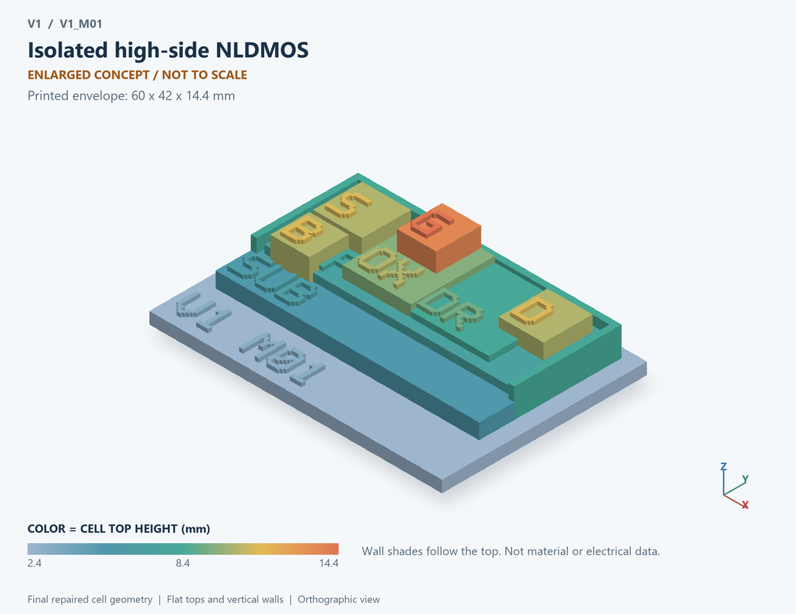
Download STL / 下载 Top view / 俯视
Printed features / 实物结构
- SUB: Exposed substrate ledge
外露衬底台阶 - P: Body well
体区/阱 - DR: Extended drift region
延伸漂移区 - S: Source contact / implanted region
源极接触/注入区 - D: Drain contact / implanted region
漏极接触/注入区 - OX: Exposed gate dielectric ledge
外露栅介质台阶 - G: Gate electrode
栅电极 - B: Separate body contact, distinct from doping label
独立体接触，与掺杂标签区分 - ISO: Exposed isolation-boundary marker
外露隔离边界标记 - ISO: Exposed isolation-boundary marker
外露隔离边界标记 - ISO: Exposed isolation-boundary marker
外露隔离边界标记 - ISO: U-shaped exposed isolation boundary; teaching cutaway, not a specified foundry isolation topology
U形外露隔离边界，教学剖切示意，非指定晶圆厂隔离拓扑 - POL: N-channel schematic
N沟道示意
Full source notes / 完整来源说明Teaching scope / 教学范围
N-channel high-side well and extended drain; distinguish the floating source/body domain from substrate. Teaching geometry is enlarged and not to scale. No foundry cross-section, mask dimensions, dopant profile, local field solution or electrically functional printed device is claimed.
N沟道高侧阱与延长漏区；区分浮动源体域和衬底。教学几何经放大且不按真实比例；不代表晶圆厂截面、掩模尺寸、掺杂分布、局部场解或可工作的打印电子器件。
Teaching decomposition of the source model. The generated manifest, not this suggested parts list, identifies features physically present in each STL.
原模型的教学结构分解。各STL实际具备的形体应以生成清单为准，不把本建议部件表等同于全部实体印记。
- Reference substrate beneath the isolated domain
隔离域下的参考衬底 - Conceptual isolation boundary, not a specified DTI process
概念隔离边界，非指定DTI工艺 - Body and source region
体区与源区 - Extended drain supports the lateral voltage drop
承受横向压降的延长漏区 - Gate above channel and insulating layer
沟道和绝缘层上方的栅极 - Source, drain, gate and body identification
源漏栅体辨识
V1_M02 · Low-side NLDMOS
低侧NLDMOS
physical_device · legacy
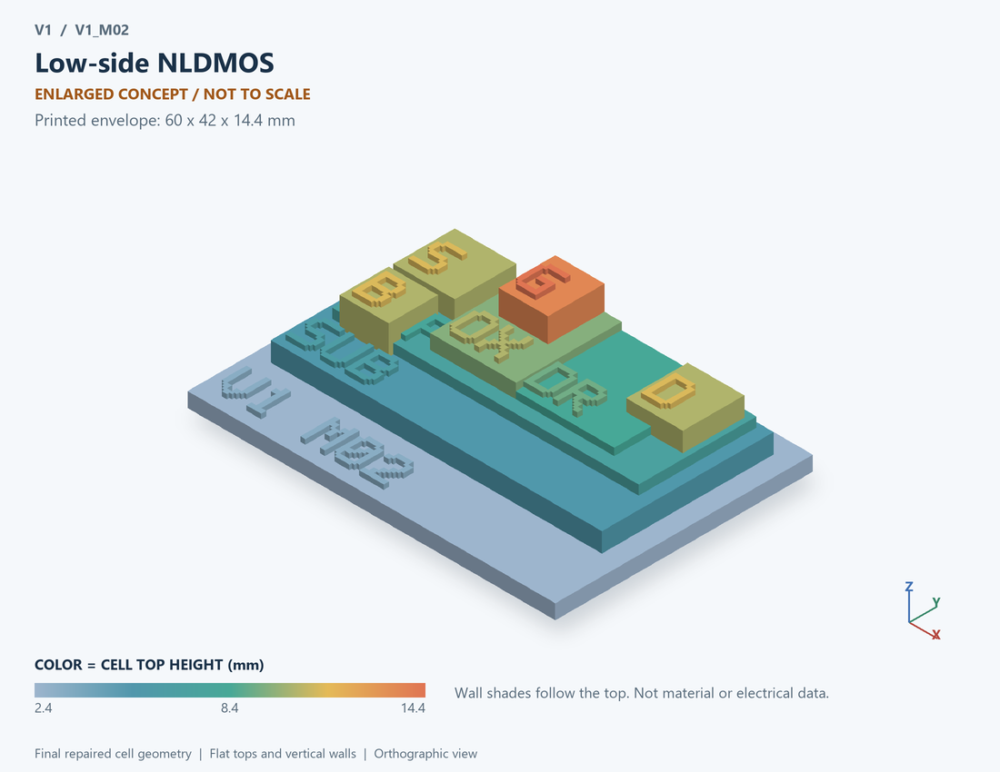
Download STL / 下载 Top view / 俯视
Printed features / 实物结构
- SUB: Exposed substrate ledge
外露衬底台阶 - P: Body well
体区/阱 - DR: Extended drift region
延伸漂移区 - S: Source contact / implanted region
源极接触/注入区 - D: Drain contact / implanted region
漏极接触/注入区 - OX: Exposed gate dielectric ledge
外露栅介质台阶 - G: Gate electrode
栅电极 - B: Separate body contact, distinct from doping label
独立体接触，与掺杂标签区分 - POL: N-channel schematic
N沟道示意
Full source notes / 完整来源说明Teaching scope / 教学范围
Ground-referenced lateral power MOS; body connection and drift shape are illustrative, not a verified cell. Teaching geometry is enlarged and not to scale. No foundry cross-section, mask dimensions, dopant profile, local field solution or electrically functional printed device is claimed.
地参考横向功率MOS；体连接和漂移区形状均为示意，非验证单元。教学几何经放大且不按真实比例；不代表晶圆厂截面、掩模尺寸、掺杂分布、局部场解或可工作的打印电子器件。
Teaching decomposition of the source model. The generated manifest, not this suggested parts list, identifies features physically present in each STL.
原模型的教学结构分解。各STL实际具备的形体应以生成清单为准，不把本建议部件表等同于全部实体印记。
- Reference substrate
参考衬底 - Body with source region
含源区的体区 - Extended drain region
延长漏区 - Gate and dielectric above the channel
沟道上方的栅与介质 - Separate electrical terminals
独立电气端标记
V1_M03 · High-voltage PLDMOS
高压PLDMOS
physical_device · legacy
Download STL / 下载 Top view / 俯视
Printed features / 实物结构
- SUB: Exposed substrate ledge
外露衬底台阶 - N: Body well
体区/阱 - DR: Extended drift region
延伸漂移区 - S: Source contact / implanted region
源极接触/注入区 - D: Drain contact / implanted region
漏极接触/注入区 - OX: Exposed gate dielectric ledge
外露栅介质台阶 - G: Gate electrode
栅电极 - B: Separate body contact, distinct from doping label
独立体接触，与掺杂标签区分 - POL: P-channel schematic
P沟道示意
Full source notes / 完整来源说明Teaching scope / 教学范围
P-channel polarity must be distinguished from NLDMOS; no process-specific polarity stack or voltage rating is established. Teaching geometry is enlarged and not to scale. No foundry cross-section, mask dimensions, dopant profile, local field solution or electrically functional printed device is claimed.
须区分P沟道与N沟道极性；不确定特定工艺层次或耐压。教学几何经放大且不按真实比例；不代表晶圆厂截面、掩模尺寸、掺杂分布、局部场解或可工作的打印电子器件。
Teaching decomposition of the source model. The generated manifest, not this suggested parts list, identifies features physically present in each STL.
原模型的教学结构分解。各STL实际具备的形体应以生成清单为准，不把本建议部件表等同于全部实体印记。
- Reference substrate
参考衬底 - Illustrative P-channel body/well context
P沟道体阱示意 - P-type source region
P型源区 - P-type extended drain region
P型延长漏区 - Insulated control electrode
绝缘控制栅 - Source, gate, drain and body labels
源栅漏体标签
V1_M04 · Drain-extended NMOS
高压DENMOS
physical_device · legacy
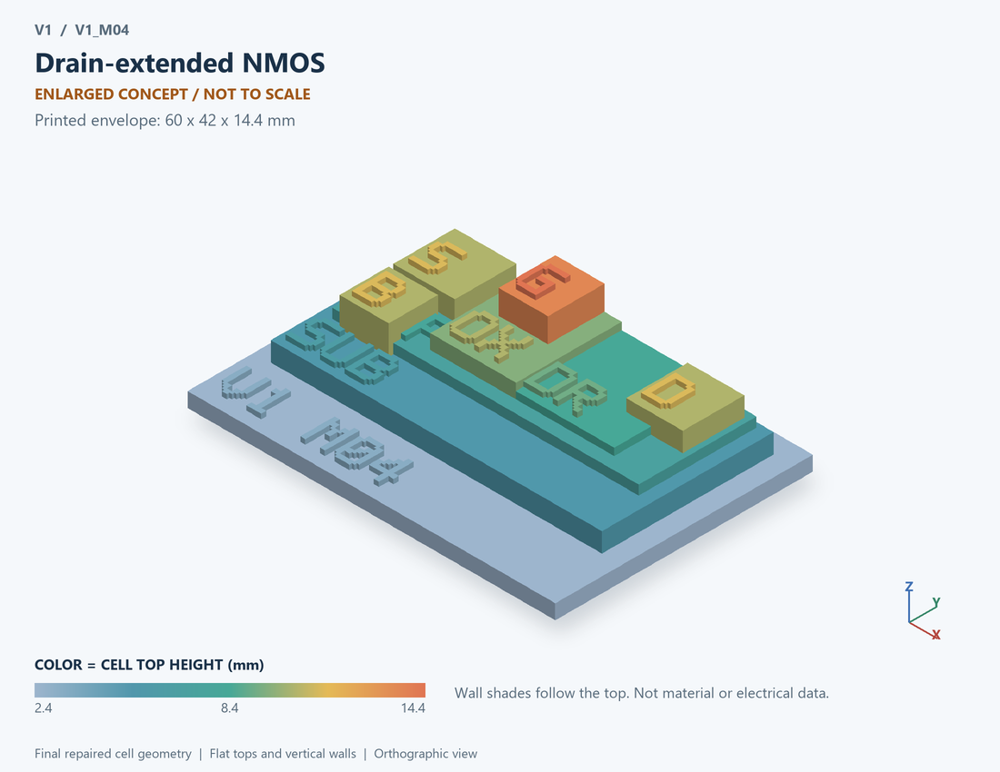
Download STL / 下载 Top view / 俯视
Printed features / 实物结构
- SUB: Exposed substrate ledge
外露衬底台阶 - P: Body well
体区/阱 - DR: Extended drift region
延伸漂移区 - S: Source contact / implanted region
源极接触/注入区 - D: Drain contact / implanted region
漏极接触/注入区 - OX: Exposed gate dielectric ledge
外露栅介质台阶 - G: Gate electrode
栅电极 - B: Separate body contact, distinct from doping label
独立体接触，与掺杂标签区分 - POL: N-channel schematic
N沟道示意
Full source notes / 完整来源说明Teaching scope / 教学范围
A drain-extension concept for high-voltage sensing/level shifting; do not infer a power-switch SOA from the shape. Teaching geometry is enlarged and not to scale. No foundry cross-section, mask dimensions, dopant profile, local field solution or electrically functional printed device is claimed.
高压检测/电平移位的漏端延长概念；不得从结构推断功率开关SOA。教学几何经放大且不按真实比例；不代表晶圆厂截面、掩模尺寸、掺杂分布、局部场解或可工作的打印电子器件。
Teaching decomposition of the source model. The generated manifest, not this suggested parts list, identifies features physically present in each STL.
原模型的教学结构分解。各STL实际具备的形体应以生成清单为准，不把本建议部件表等同于全部实体印记。
- Body and source region
体区与源区 - Gate-controlled channel
栅控沟道 - Insulating separation
绝缘分隔 - Control electrode
控制栅 - Conceptual extended drain
概念延长漏区 - Four-terminal identification
四端辨识
V1_M05 · Low-voltage NMOS
低压NMOS
physical_device · legacy
Download STL / 下载 Top view / 俯视
Printed features / 实物结构
- SUB: Exposed substrate ledge
外露衬底台阶 - P: Body well
体区/阱 - S: Source contact / implanted region
源极接触/注入区 - D: Drain contact / implanted region
漏极接触/注入区 - OX: Exposed gate dielectric ledge
外露栅介质台阶 - G: Gate electrode
栅电极 - B: Separate body contact, distinct from doping label
独立体接触，与掺杂标签区分 - POL: N-channel schematic
N沟道示意
Full source notes / 完整来源说明Teaching scope / 教学范围
Low-voltage control MOS only; the legacy circuit model ties body to reference and does not derive a real channel geometry. Teaching geometry is enlarged and not to scale. No foundry cross-section, mask dimensions, dopant profile, local field solution or electrically functional printed device is claimed.
仅低压控制MOS；旧电路模型体端接参考，不反推真实沟道几何。教学几何经放大且不按真实比例；不代表晶圆厂截面、掩模尺寸、掺杂分布、局部场解或可工作的打印电子器件。
Teaching decomposition of the source model. The generated manifest, not this suggested parts list, identifies features physically present in each STL.
原模型的教学结构分解。各STL实际具备的形体应以生成清单为准，不把本建议部件表等同于全部实体印记。
- Illustrative N-channel body
N沟道体区示意 - Source diffusion
源扩散区 - Drain diffusion
漏扩散区 - Gate dielectric
栅介质 - Insulated control electrode
绝缘控制栅 - Body connection
体端连接
V1_M06 · Low-voltage PMOS
低压PMOS
physical_device · legacy
Download STL / 下载 Top view / 俯视
Printed features / 实物结构
- SUB: Exposed substrate ledge
外露衬底台阶 - N: Body well
体区/阱 - S: Source contact / implanted region
源极接触/注入区 - D: Drain contact / implanted region
漏极接触/注入区 - OX: Exposed gate dielectric ledge
外露栅介质台阶 - G: Gate electrode
栅电极 - B: Separate body contact, distinct from doping label
独立体接触，与掺杂标签区分 - POL: P-channel schematic
P沟道示意
Full source notes / 完整来源说明Teaching scope / 教学范围
Show opposite well/diffusion polarity to NMOS; no claim of a specific CMOS foundry cross-section. Teaching geometry is enlarged and not to scale. No foundry cross-section, mask dimensions, dopant profile, local field solution or electrically functional printed device is claimed.
阱与扩散极性和NMOS相反；不代表某晶圆厂CMOS截面。教学几何经放大且不按真实比例；不代表晶圆厂截面、掩模尺寸、掺杂分布、局部场解或可工作的打印电子器件。
Teaching decomposition of the source model. The generated manifest, not this suggested parts list, identifies features physically present in each STL.
原模型的教学结构分解。各STL实际具备的形体应以生成清单为准，不把本建议部件表等同于全部实体印记。
- Illustrative P-channel well
P沟道阱示意 - Source diffusion
源扩散区 - Drain diffusion
漏扩散区 - Gate dielectric
栅介质 - Insulated control electrode
绝缘控制栅 - Well/body connection
阱体连接
V1_M07 · Drain-extended PMOS
高压DEPMOS
physical_device · legacy
Download STL / 下载 Top view / 俯视
Printed features / 实物结构
- SUB: Exposed substrate ledge
外露衬底台阶 - N: Body well
体区/阱 - DR: Extended drift region
延伸漂移区 - S: Source contact / implanted region
源极接触/注入区 - D: Drain contact / implanted region
漏极接触/注入区 - OX: Exposed gate dielectric ledge
外露栅介质台阶 - G: Gate electrode
栅电极 - B: Separate body contact, distinct from doping label
独立体接触，与掺杂标签区分 - POL: P-channel schematic
P沟道示意
Full source notes / 完整来源说明Teaching scope / 教学范围
P-channel drain extension for bias/level-shift teaching; geometry does not establish high-side operating capability. Teaching geometry is enlarged and not to scale. No foundry cross-section, mask dimensions, dopant profile, local field solution or electrically functional printed device is claimed.
P沟道漏延长用于偏置/移位教学；几何不证明高侧工作能力。教学几何经放大且不按真实比例；不代表晶圆厂截面、掩模尺寸、掺杂分布、局部场解或可工作的打印电子器件。
Teaching decomposition of the source model. The generated manifest, not this suggested parts list, identifies features physically present in each STL.
原模型的教学结构分解。各STL实际具备的形体应以生成清单为准，不把本建议部件表等同于全部实体印记。
- Illustrative well context
示意阱区 - Source region
源区 - Gate-controlled channel
栅控沟道 - Insulated control electrode
绝缘控制栅 - P-type extended drain
P型延长漏区 - Four-terminal identification
四端辨识
V1_Q01 · NPN bipolar transistor
NPN双极晶体管
physical_device · legacy
Download STL / 下载 Top view / 俯视
Printed features / 实物结构
- SUB: Exposed substrate ledge
外露衬底台阶 - C: Collector region
集电区 - B: Base region
基区 - E: Emitter region
发射区 - DOP: N-P-N doping order
N-P-N掺杂顺序
Full source notes / 完整来源说明Teaching scope / 教学范围
N-P-N region ordering is conceptual; the legacy model is forward-active only, not a process cross-section or saturated transistor model. Teaching geometry is enlarged and not to scale. No foundry cross-section, mask dimensions, dopant profile, local field solution or electrically functional printed device is claimed.
N-P-N区顺序为概念；旧模型仅正向有源区，不是工艺截面或饱和模型。教学几何经放大且不按真实比例；不代表晶圆厂截面、掩模尺寸、掺杂分布、局部场解或可工作的打印电子器件。
Teaching decomposition of the source model. The generated manifest, not this suggested parts list, identifies features physically present in each STL.
原模型的教学结构分解。各STL实际具备的形体应以生成清单为准，不把本建议部件表等同于全部实体印记。
- Collector region
集电区 - Thin base enlarged for handling
为教学放大的薄基区 - Emitter region
发射区 - Collector, base and emitter labels
集电极基极发射极标签
V1_Q02 · PNP bipolar transistor
PNP双极晶体管
physical_device · legacy
Download STL / 下载 Top view / 俯视
Printed features / 实物结构
- SUB: Exposed substrate ledge
外露衬底台阶 - C: Collector region
集电区 - B: Base region
基区 - E: Emitter region
发射区 - DOP: P-N-P doping order
P-N-P掺杂顺序
Full source notes / 完整来源说明Teaching scope / 教学范围
P-N-P region ordering is illustrative; the simulation does not establish lateral versus vertical fabrication. Teaching geometry is enlarged and not to scale. No foundry cross-section, mask dimensions, dopant profile, local field solution or electrically functional printed device is claimed.
P-N-P区顺序为示意；仿真不能确定采用横向或纵向制造结构。教学几何经放大且不按真实比例；不代表晶圆厂截面、掩模尺寸、掺杂分布、局部场解或可工作的打印电子器件。
Teaching decomposition of the source model. The generated manifest, not this suggested parts list, identifies features physically present in each STL.
原模型的教学结构分解。各STL实际具备的形体应以生成清单为准，不把本建议部件表等同于全部实体印记。
- Collector region
集电区 - Base region
基区 - Emitter region
发射区 - Collector, base and emitter labels
集电极基极发射极标签
V1_D01 · MOS body PN freewheel diode
体PN续流二极管
physical_device · legacy
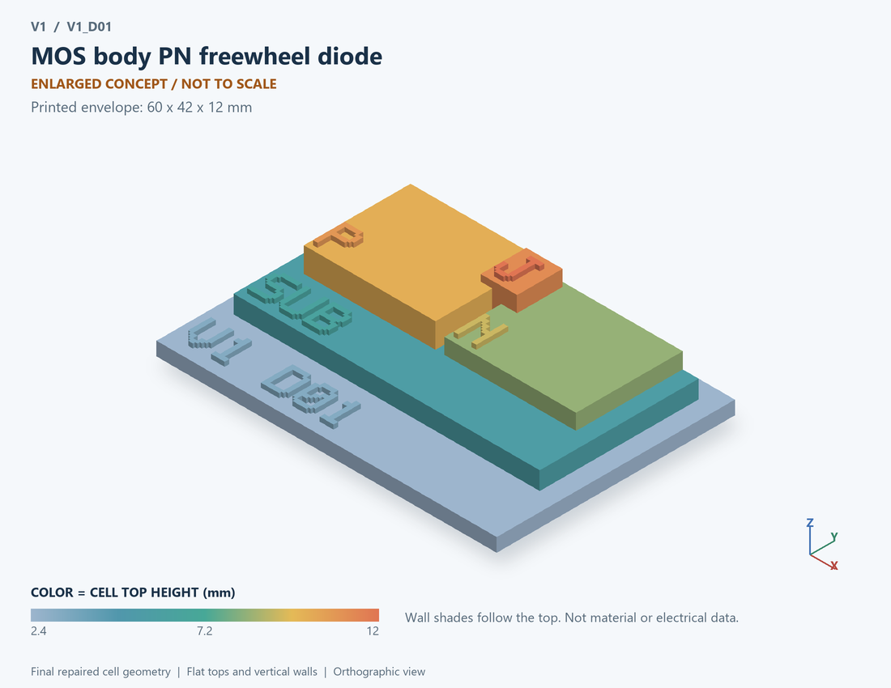
Download STL / 下载 Top view / 俯视
Printed features / 实物结构
- SUB: Exposed substrate ledge
外露衬底台阶 - P: P-type region / anode
P型区/阳极 - N: N-type region / cathode
N型区/阴极 - J: Exposed junction marker
外露结界面标记
Full source notes / 完整来源说明Teaching scope / 教学范围
Represent the body-to-drift junction of an N-channel MOS, not a standalone added diode; legacy model has no reverse recovery. Teaching geometry is enlarged and not to scale. No foundry cross-section, mask dimensions, dopant profile, local field solution or electrically functional printed device is claimed.
表示N沟道MOS的体区至漂移区结，并非另外集成的独立二极管；旧模型无反向恢复。教学几何经放大且不按真实比例；不代表晶圆厂截面、掩模尺寸、掺杂分布、局部场解或可工作的打印电子器件。
Teaching decomposition of the source model. The generated manifest, not this suggested parts list, identifies features physically present in each STL.
原模型的教学结构分解。各STL实际具备的形体应以生成清单为准，不把本建议部件表等同于全部实体印记。
- Anode-side body region
阳极侧体区 - Enlarged PN interface
放大的PN界面 - Cathode-side drift region
阴极侧漂移区 - A is body/source side, K is drain side in this concept
本概念A为体源侧，K为漏侧
V1_D02 · High-voltage bootstrap PN diode
高压自举PN二极管
physical_device · legacy
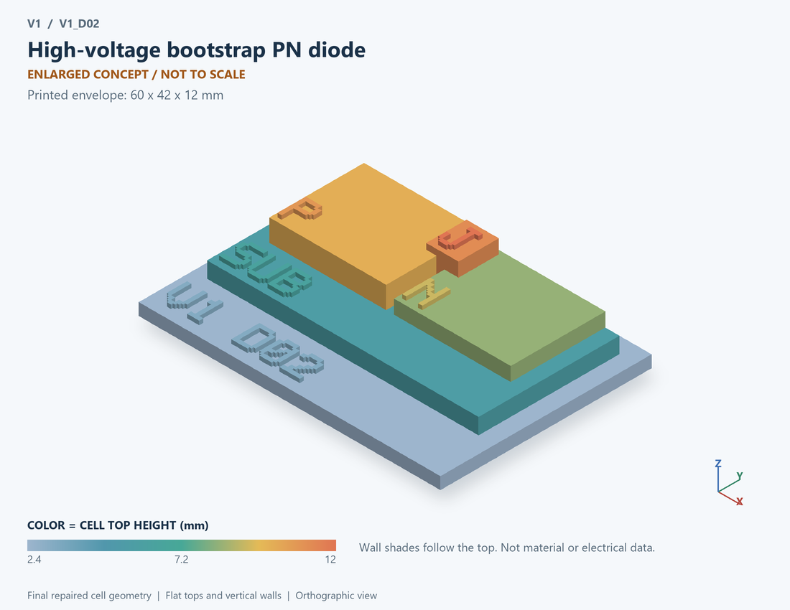
Download STL / 下载 Top view / 俯视
Printed features / 实物结构
- SUB: Exposed substrate ledge
外露衬底台阶 - P: P-type region / anode
P型区/阳极 - N: N-type region / cathode
N型区/阴极 - J: Exposed junction marker
外露结界面标记
Full source notes / 完整来源说明Teaching scope / 教学范围
A conceptual PN blocking junction; the model predicts neither breakdown nor recovery, and does not prove bootstrap isolation. Teaching geometry is enlarged and not to scale. No foundry cross-section, mask dimensions, dopant profile, local field solution or electrically functional printed device is claimed.
概念PN阻断结；模型不预测击穿或恢复，也不证明自举隔离。教学几何经放大且不按真实比例；不代表晶圆厂截面、掩模尺寸、掺杂分布、局部场解或可工作的打印电子器件。
Teaching decomposition of the source model. The generated manifest, not this suggested parts list, identifies features physically present in each STL.
原模型的教学结构分解。各STL实际具备的形体应以生成清单为准，不把本建议部件表等同于全部实体印记。
- Anode-side region
阳极侧区域 - Enlarged junction region
放大的结区 - Cathode-side voltage-support region
阴极侧承压区 - Anode and cathode identification
阳极阴极辨识
V1_D03 · Schottky diode
肖特基二极管
physical_device · legacy
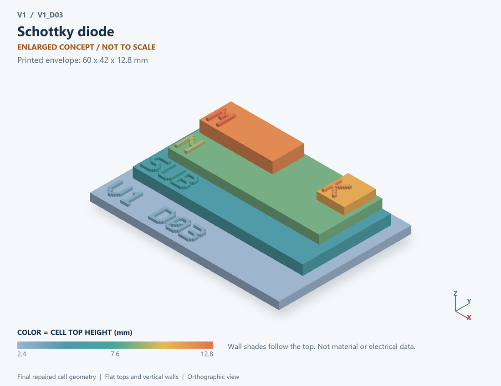
Download STL / 下载 Top view / 俯视
Printed features / 实物结构
- SUB: Exposed substrate ledge
外露衬底台阶 - N: Semiconductor drift region
半导体漂移区 - M: Metal / semiconductor contact
金属/半导体接触 - K: Cathode contact
阴极接触
Full source notes / 完整来源说明Teaching scope / 教学范围
A metal-semiconductor barrier concept; no particular metal, barrier height, high-voltage grade or foundry option is established. Teaching geometry is enlarged and not to scale. No foundry cross-section, mask dimensions, dopant profile, local field solution or electrically functional printed device is claimed.
金属半导体势垒概念；不指定金属、势垒高度、高压等级或工艺选件。教学几何经放大且不按真实比例；不代表晶圆厂截面、掩模尺寸、掺杂分布、局部场解或可工作的打印电子器件。
Teaching decomposition of the source model. The generated manifest, not this suggested parts list, identifies features physically present in each STL.
原模型的教学结构分解。各STL实际具备的形体应以生成清单为准，不把本建议部件表等同于全部实体印记。
- Rectifying metal contact
整流金属接触 - Conceptual metal-semiconductor interface
金属半导体界面概念 - Conduction region
导电半导体区 - Ohmic return contact
欧姆回流接触
V1_D04 · Gate Zener clamp
栅极Zener钳位
physical_device · legacy
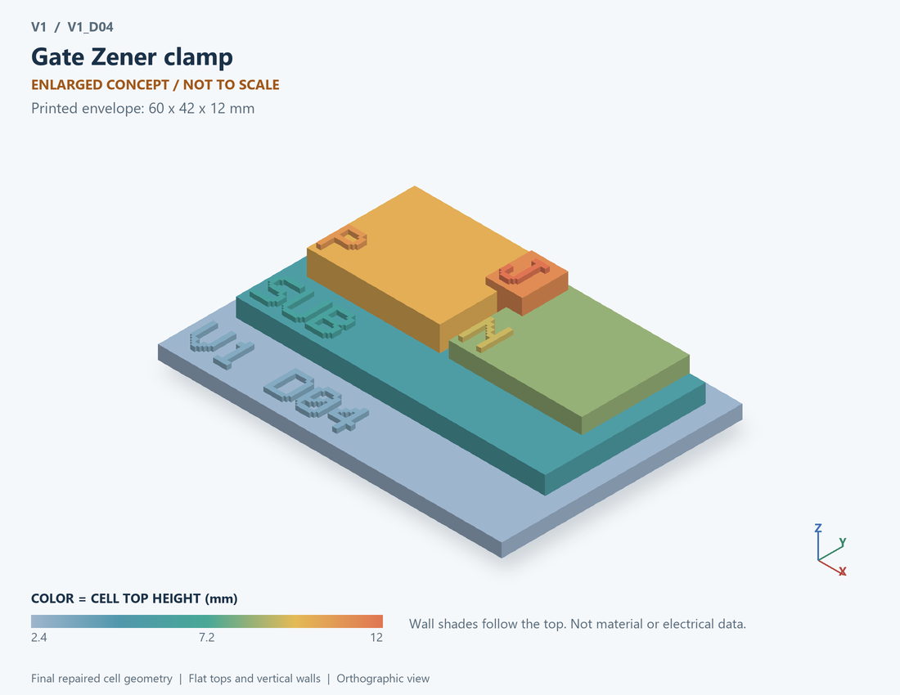
Download STL / 下载 Top view / 俯视
Printed features / 实物结构
- SUB: Exposed substrate ledge
外露衬底台阶 - P: P-type region / anode
P型区/阳极 - N: N-type region / cathode
N型区/阴极 - J: Exposed junction marker
外露结界面标记
Full source notes / 完整来源说明Teaching scope / 教学范围
The stored example is a 6 V piecewise clamp, not a gate-oxide safe-voltage specification or a tunnelling/avalanche field solution. Teaching geometry is enlarged and not to scale. No foundry cross-section, mask dimensions, dopant profile, local field solution or electrically functional printed device is claimed.
原示例为6V分段钳位，不是栅氧安全电压规范或隧穿/雪崩场求解。教学几何经放大且不按真实比例；不代表晶圆厂截面、掩模尺寸、掺杂分布、局部场解或可工作的打印电子器件。
Teaching decomposition of the source model. The generated manifest, not this suggested parts list, identifies features physically present in each STL.
原模型的教学结构分解。各STL实际具备的形体应以生成清单为准，不把本建议部件表等同于全部实体印记。
- Anode-side region
阳极侧区 - Reverse-clamp junction concept
反向钳位结概念 - Cathode-side region
阴极侧区 - Reverse current direction when threshold is exceeded
超过阈值后的反向电流方向
V1_J01 · High-voltage startup JFET
高压启动JFET
physical_device · legacy
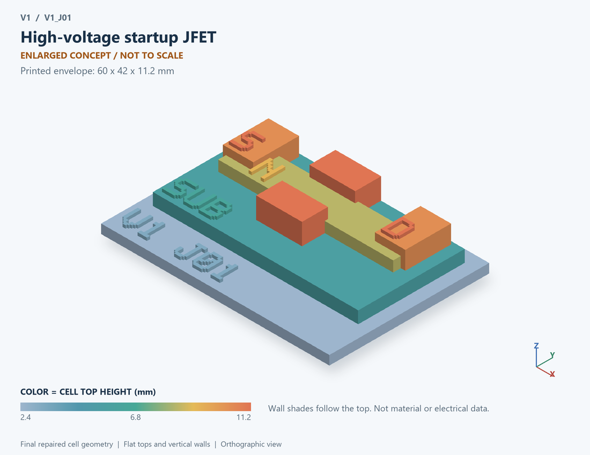
Download STL / 下载 Top view / 俯视
Printed features / 实物结构
- SUB: Exposed substrate ledge
外露衬底台阶 - N: N-type conducting channel
N型导电沟道 - G: P-type gate regions
P型栅区 - G: P-type gate regions
P型栅区 - S: Source
源极 - D: Drain
漏极
Full source notes / 完整来源说明Teaching scope / 教学范围
Show a junction-gated channel; the legacy equation only demonstrates VGS=0 startup and has no turn-off network or calibrated pinch-off geometry. Teaching geometry is enlarged and not to scale. No foundry cross-section, mask dimensions, dopant profile, local field solution or electrically functional printed device is claimed.
展示结栅控制沟道；旧方程仅示意VGS=0启动，无关断网络或标定夹断几何。教学几何经放大且不按真实比例；不代表晶圆厂截面、掩模尺寸、掺杂分布、局部场解或可工作的打印电子器件。
Teaching decomposition of the source model. The generated manifest, not this suggested parts list, identifies features physically present in each STL.
原模型的教学结构分解。各STL实际具备的形体应以生成清单为准，不把本建议部件表等同于全部实体印记。
- Source-to-drain conductive channel
源至漏导电沟道 - Conceptual side junctions
两侧结栅概念 - Illustrative depletion boundaries
示意耗尽边界 - Drain, gate and source
漏栅源
V1_R01 · High-voltage polysilicon resistor chain
高压多晶硅电阻链
passive · legacy
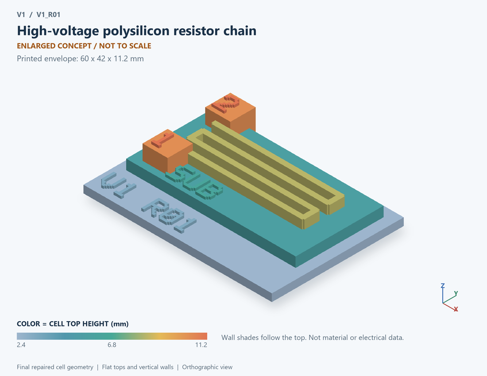
Download STL / 下载 Top view / 俯视
Printed features / 实物结构
- SUB: Exposed substrate ledge
外露衬底台阶 - R: Serpentine resistive strip
蛇形电阻条 - 1: Terminal 1 at first path end
第一路径端的端子1 - 2: Terminal 2 at second path end
第二路径端的端子2
Full source notes / 完整来源说明Teaching scope / 教学范围
Multiple visible sections teach voltage division; segment count and geometry do not establish safe per-segment voltage. Teaching geometry is enlarged and not to scale. No foundry cross-section, mask dimensions, dopant profile, local field solution or electrically functional printed device is claimed.
可见多段表示分压；段数与几何不确定每段安全电压。教学几何经放大且不按真实比例；不代表晶圆厂截面、掩模尺寸、掺杂分布、局部场解或可工作的打印电子器件。
Teaching decomposition of the source model. The generated manifest, not this suggested parts list, identifies features physically present in each STL.
原模型的教学结构分解。各STL实际具备的形体应以生成清单为准，不把本建议部件表等同于全部实体印记。
- Insulating support concept
绝缘支撑概念 - Segmented resistive strip
分段电阻条 - Visible voltage-sharing sections
可见分压段 - Two electrical ends
两个电端
V1_R02 · Current-sense resistor
电流检测电阻
passive · legacy
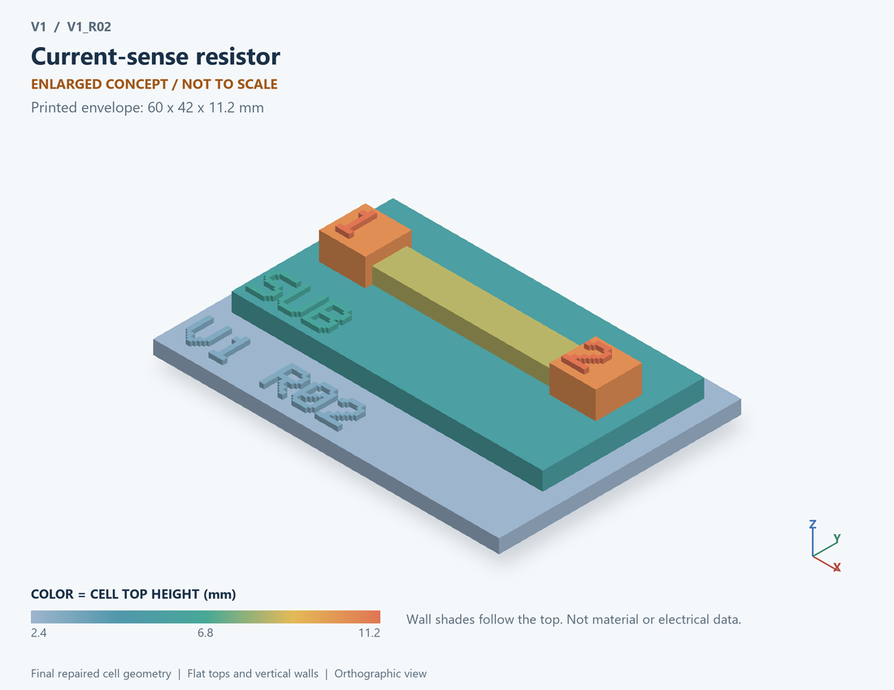
Download STL / 下载 Top view / 俯视
Printed features / 实物结构
- SUB: Exposed substrate ledge
外露衬底台阶 - R: Short, wide sense element
短而宽的检测电阻体 - 1: Terminal 1 at first path end
第一路径端的端子1 - 2: Terminal 2 at second path end
第二路径端的端子2
Full source notes / 完整来源说明Teaching scope / 教学范围
Show a short resistive path and two modeled terminals; optional Kelvin sense is not part of the original two-terminal simulation. Teaching geometry is enlarged and not to scale. No foundry cross-section, mask dimensions, dopant profile, local field solution or electrically functional printed device is claimed.
展示短电阻路径与两个已建模端口；可选Kelvin检测不属于原两端仿真。教学几何经放大且不按真实比例；不代表晶圆厂截面、掩模尺寸、掺杂分布、局部场解或可工作的打印电子器件。
Teaching decomposition of the source model. The generated manifest, not this suggested parts list, identifies features physically present in each STL.
原模型的教学结构分解。各STL实际具备的形体应以生成清单为准，不把本建议部件表等同于全部实体印记。
- Sensing resistance
检测电阻 - Two modeled electrical terminals
两个已建模电端 - Voltage measured across the link
跨电阻测压标记
V1_C01 · MIM capacitor
MIM电容
passive · legacy
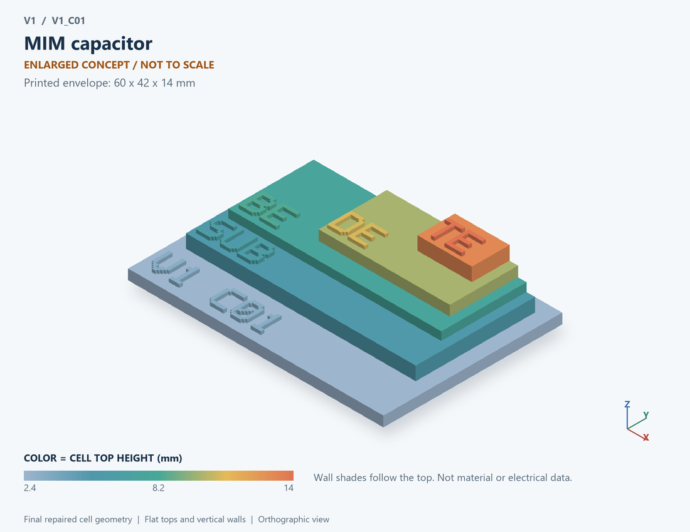
Download STL / 下载 Top view / 俯视
Printed features / 实物结构
- SUB: Exposed substrate ledge
外露衬底台阶 - BE: Bottom electrode
下电极 - DE: Dielectric
介质 - TE: Top electrode
上电极
Full source notes / 完整来源说明Teaching scope / 教学范围
Two metal plates separated by dielectric; the saved model is a low-voltage 5 V example, not a high-voltage capacitor rating. Teaching geometry is enlarged and not to scale. No foundry cross-section, mask dimensions, dopant profile, local field solution or electrically functional printed device is claimed.
介质分隔的两层金属板；保存模型是低压5V示例，不是高压电容额定。教学几何经放大且不按真实比例；不代表晶圆厂截面、掩模尺寸、掺杂分布、局部场解或可工作的打印电子器件。
Teaching decomposition of the source model. The generated manifest, not this suggested parts list, identifies features physically present in each STL.
原模型的教学结构分解。各STL实际具备的形体应以生成清单为准，不把本建议部件表等同于全部实体印记。
- First electrode
第一电极 - Enlarged insulating layer
放大绝缘层 - Second electrode
第二电极 - Separate electrode labels
分离电极标签
V1_C02 · MOM capacitor
MOM电容
passive · legacy
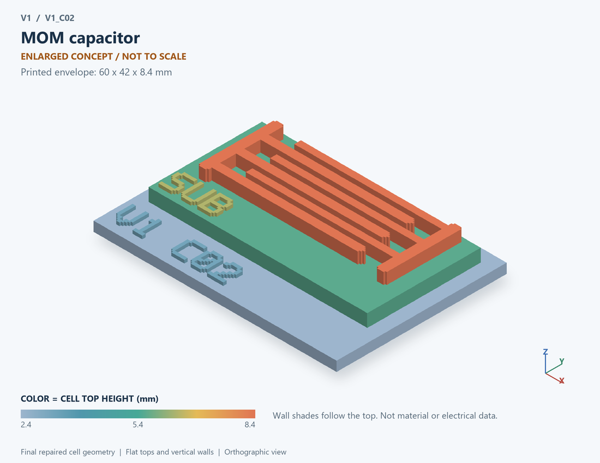
Download STL / 下载 Top view / 俯视
Printed features / 实物结构
- SUB: Exposed substrate ledge
外露衬底台阶 - 1: First metal comb bus
第一金属梳形母线 - 2: Second metal comb bus
第二金属梳形母线 - 1: First comb fingers
第一梳形指条 - 1: First comb fingers
第一梳形指条 - 1: First comb fingers
第一梳形指条 - 2: Second comb fingers
第二梳形指条 - 2: Second comb fingers
第二梳形指条 - 2: Second comb fingers
第二梳形指条
Full source notes / 完整来源说明Teaching scope / 教学范围
Interleaved metal fingers teach lateral/fringing capacitance; spacing is exaggerated and not a design rule or high-voltage rating. Teaching geometry is enlarged and not to scale. No foundry cross-section, mask dimensions, dopant profile, local field solution or electrically functional printed device is claimed.
交错金属指表示侧向/边缘电容；间距放大，非设计规则或高压额定。教学几何经放大且不按真实比例；不代表晶圆厂截面、掩模尺寸、掺杂分布、局部场解或可工作的打印电子器件。
Teaching decomposition of the source model. The generated manifest, not this suggested parts list, identifies features physically present in each STL.
原模型的教学结构分解。各STL实际具备的形体应以生成清单为准，不把本建议部件表等同于全部实体印记。
- First connected metal-finger set
第一组连通金属指 - Second connected metal-finger set
第二组连通金属指 - Separated opposing fingers
相对指间绝缘间隙 - Conceptual support beneath fingers
金属指下方概念支撑
V1_I01 · Isolation junction and DTI equivalent network
隔离结与DTI等效网络
isolation_structure · legacy
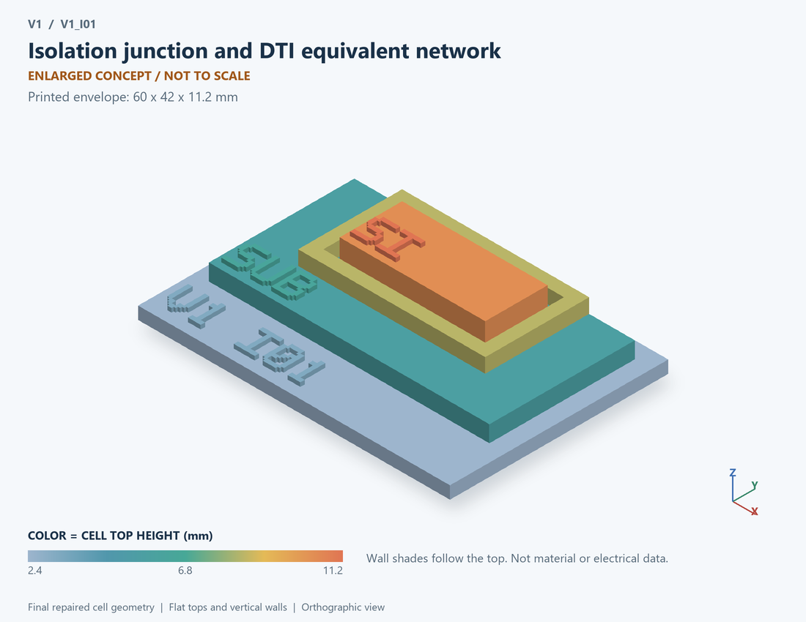
Download STL / 下载 Top view / 俯视
Printed features / 实物结构
- SUB: Exposed substrate ledge
外露衬底台阶 - SI: Silicon island
硅岛 - DTI: Raised deep-trench boundary marker
深沟槽边界凸起标记 - DTI: Raised deep-trench boundary marker
深沟槽边界凸起标记 - DTI: Raised deep-trench boundary marker
深沟槽边界凸起标记 - DTI: Raised deep-trench boundary marker
深沟槽边界凸起标记 - DTI: Trench dielectric is raised for touch; it is not a conductive wall
沟槽介质用凸起便于触摸，不表示导电墙
Full source notes / 完整来源说明Teaching scope / 教学范围
Isolation is an RC equivalent between domains, not an independent power device; a trench picture does not validate isolation voltage, latch-up or leakage. Teaching geometry is enlarged and not to scale. No foundry cross-section, mask dimensions, dopant profile, local field solution or electrically functional printed device is claimed.
隔离为域间RC等效，不是独立功率器件；沟槽图不验证隔离电压、闩锁或漏电。教学几何经放大且不按真实比例；不代表晶圆厂截面、掩模尺寸、掺杂分布、局部场解或可工作的打印电子器件。
Teaching decomposition of the source model. The generated manifest, not this suggested parts list, identifies features physically present in each STL.
原模型的教学结构分解。各STL实际具备的形体应以生成清单为准，不把本建议部件表等同于全部实体印记。
- Floating circuit domain
浮动电路域 - Illustrative isolation/trench boundary
示意隔离/沟槽边界 - Reference/substrate domain
参考衬底域 - Equivalent leakage and capacitive coupling
漏电与电容耦合等效关系
V1_E01 · High-voltage ESD clamp equivalent
高压ESD钳位等效器件
mechanism_demo · legacy
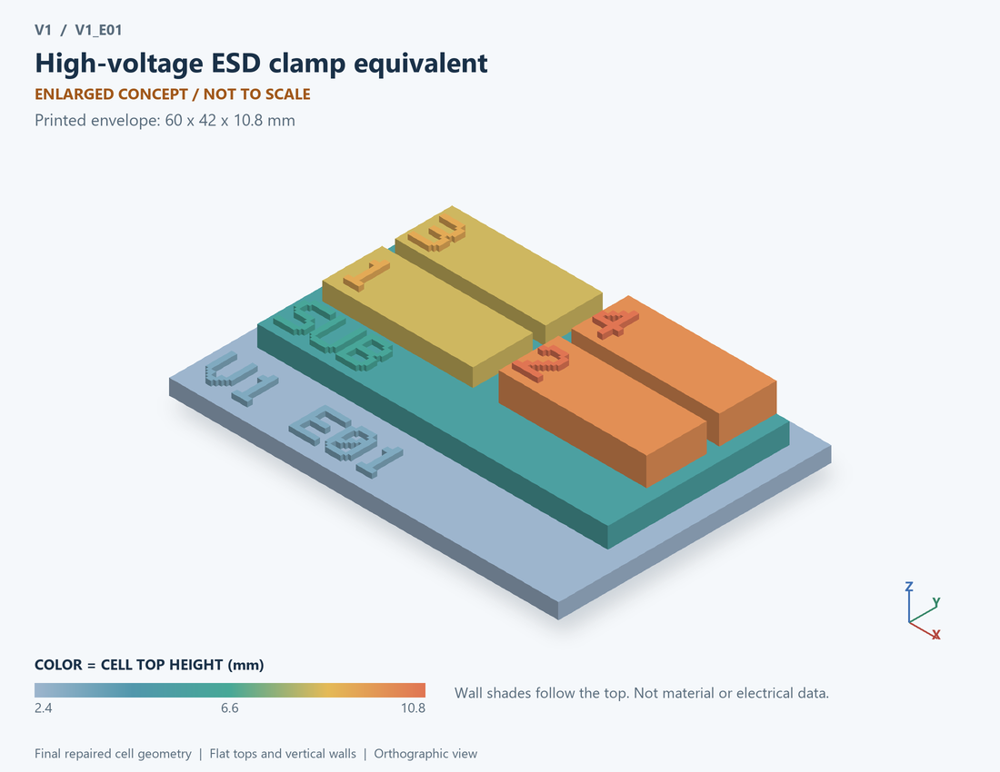
Download STL / 下载 Top view / 俯视
Printed features / 实物结构
- SUB: Exposed substrate ledge
外露衬底台阶 - 1: Protected electrical node
受保护节点 - 2: Assumed threshold concept
假设阈值概念 - 3: Behavioral conduction path
行为导电路径 - 4: Return node
回流节点 - KEY: Numbered functional blocks, not silicon layout or solved 3D fields. See numbered key in the atlas.
编号功能块，不是硅版图或求解的三维场，编号说明见图册
Full source notes / 完整来源说明Teaching scope / 教学范围
Print a pad-to-return clamp block, not an invented SCR/ggNMOS cross-section; original curve has no snapback, It2 or ESD qualification. Teaching geometry is enlarged and not to scale. No foundry cross-section, mask dimensions, dopant profile, local field solution or electrically functional printed device is claimed.
打印引脚至回流端的钳位功能块，不虚构SCR/ggNMOS截面；原曲线不含回滞、It2或ESD认证。教学几何经放大且不按真实比例；不代表晶圆厂截面、掩模尺寸、掺杂分布、局部场解或可工作的打印电子器件。
Teaching decomposition of the source model. The generated manifest, not this suggested parts list, identifies features physically present in each STL.
原模型的教学结构分解。各STL实际具备的形体应以生成清单为准，不把本建议部件表等同于全部实体印记。
- Protected electrical node
受保护节点 - Assumed threshold concept
假设阈值概念 - Behavioral conduction path
行为导电路径 - Return node
回流节点
V1_L01 · External power inductor
外接功率电感
passive · legacy
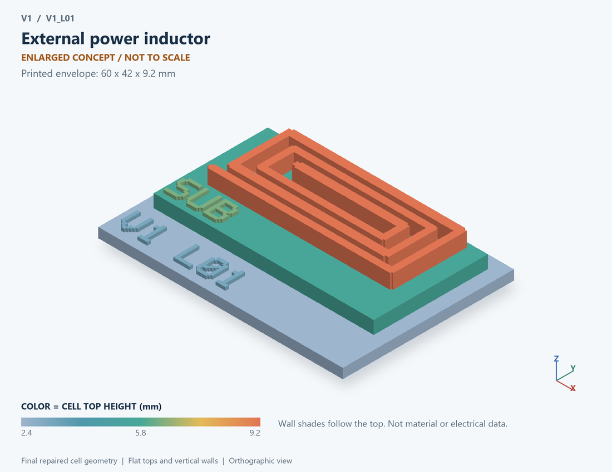
Download STL / 下载 Top view / 俯视
Printed features / 实物结构
- SUB: Exposed substrate ledge
外露衬底台阶 - L1: Planar winding concept
平面绕组概念
Full source notes / 完整来源说明Teaching scope / 教学范围
Winding and optional core are a component concept; model uses lumped L and DCR without magnetic field, core-loss or saturation geometry. Teaching geometry is enlarged and not to scale. No foundry cross-section, mask dimensions, dopant profile, local field solution or electrically functional printed device is claimed.
绕组及可选磁芯为元件概念；模型仅集总L和DCR，无磁场、磁芯损耗或饱和几何。教学几何经放大且不按真实比例；不代表晶圆厂截面、掩模尺寸、掺杂分布、局部场解或可工作的打印电子器件。
Teaching decomposition of the source model. The generated manifest, not this suggested parts list, identifies features physically present in each STL.
原模型的教学结构分解。各STL实际具备的形体应以生成清单为准，不把本建议部件表等同于全部实体印记。
- Current-carrying turns
载流线圈 - Generic core volume, not a fitted material
通用磁芯体积，非拟合材料 - Winding terminals
绕组端点 - Conceptual flux direction only
仅概念磁通方向
V1_C03 · External output capacitor
外接输出电容
passive · legacy
Download STL / 下载 Top view / 俯视
Printed features / 实物结构
- SUB: Exposed substrate ledge
外露衬底台阶 - BE: Bottom electrode
下电极 - DE: Dielectric
介质 - TE: Top electrode
上电极 - TYPE: Generic plate-capacitor concept, not an asserted MLCC/electrolytic construction
通用平板电容概念，不认定具体MLCC/电解电容结构
Full source notes / 完整来源说明Teaching scope / 教学范围
Generic two-electrode output-storage concept; no dielectric technology, package, ESR geometry or voltage rating is derived. Teaching geometry is enlarged and not to scale. No foundry cross-section, mask dimensions, dopant profile, local field solution or electrically functional printed device is claimed.
通用两电极输出储能概念；不推导介质工艺、封装、ESR几何或耐压。教学几何经放大且不按真实比例；不代表晶圆厂截面、掩模尺寸、掺杂分布、局部场解或可工作的打印电子器件。
Teaching decomposition of the source model. The generated manifest, not this suggested parts list, identifies features physically present in each STL.
原模型的教学结构分解。各STL实际具备的形体应以生成清单为准，不把本建议部件表等同于全部实体印记。
- Output-side electrode
输出侧电极 - Energy-storage separation
储能介质分隔 - Return-side electrode
回流侧电极 - Output filter role
输出滤波用途标记
V1_C04 · External input capacitor
外接输入电容
passive · legacy
Download STL / 下载 Top view / 俯视
Printed features / 实物结构
- SUB: Exposed substrate ledge
外露衬底台阶 - BE: Bottom electrode
下电极 - DE: Dielectric
介质 - TE: Top electrode
上电极 - TYPE: Generic plate-capacitor concept, not an asserted MLCC/electrolytic construction
通用平板电容概念，不认定具体MLCC/电解电容结构
Full source notes / 完整来源说明Teaching scope / 教学范围
Generic input decoupling concept; the high absolute input bias does not specify a manufactured capacitor rating. Teaching geometry is enlarged and not to scale. No foundry cross-section, mask dimensions, dopant profile, local field solution or electrically functional printed device is claimed.
通用输入去耦概念；高输入偏置不能指定已制造电容额定。教学几何经放大且不按真实比例；不代表晶圆厂截面、掩模尺寸、掺杂分布、局部场解或可工作的打印电子器件。
Teaching decomposition of the source model. The generated manifest, not this suggested parts list, identifies features physically present in each STL.
原模型的教学结构分解。各STL实际具备的形体应以生成清单为准，不把本建议部件表等同于全部实体印记。
- Input-side electrode
输入侧电极 - Energy-storage separation
储能介质分隔 - Return-side electrode
回流侧电极 - Input pulse-current loop role
输入脉冲电流回路用途标记
V1_C05 · External bootstrap capacitor
外接自举电容
passive · legacy
Download STL / 下载 Top view / 俯视
Printed features / 实物结构
- SUB: Exposed substrate ledge
外露衬底台阶 - BE: Bottom electrode
下电极 - DE: Dielectric
介质 - TE: Top electrode
上电极 - TYPE: Generic plate-capacitor concept, not an asserted MLCC/electrolytic construction
通用平板电容概念，不认定具体MLCC/电解电容结构
Full source notes / 完整来源说明Teaching scope / 教学范围
Emphasize differential VB-VS supply versus high common-mode voltage; no package clearance, isolation or high-side driver qualification is implied. Teaching geometry is enlarged and not to scale. No foundry cross-section, mask dimensions, dopant profile, local field solution or electrically functional printed device is claimed.
强调VB-VS差分供电与高共模电压的区别；不隐含封装间距、隔离或高侧驱动认证。教学几何经放大且不按真实比例；不代表晶圆厂截面、掩模尺寸、掺杂分布、局部场解或可工作的打印电子器件。
Teaching decomposition of the source model. The generated manifest, not this suggested parts list, identifies features physically present in each STL.
原模型的教学结构分解。各STL实际具备的形体应以生成清单为准，不把本建议部件表等同于全部实体印记。
- Bootstrap positive supply side
自举正供电侧 - Differential energy storage
差分储能介质 - Switching-source reference side
开关源极参考侧 - Both plates ride with the switching node
两电极随开关节点浮动
V2_N01 · SiC vertical MOSFET
SiC垂直MOSFET
physical_device · legacy
Download STL / 下载 Top view / 俯视
Printed features / 实物结构
- SUB: Exposed substrate ledge
外露衬底台阶 - D: Bottom drain
底部漏极 - DR: Vertical drift layer
垂直漂移层 - P: Body region
体区 - S: Top source
顶部源极 - G: Insulated gate
绝缘栅
Full source notes / 完整来源说明Teaching scope / 教学范围
Vertical source-to-drain teaching cell with an enlarged gate/body region; SiC polytype, gate architecture and thickness are not determined by this electrical model. Teaching geometry is enlarged and not to scale. It is not foundry geometry, a solved local field, or an electrically functional printed component.
纵向源漏教学单元，栅体区放大；电模型不能确定SiC晶型、栅结构和厚度。教学几何经放大且不按真实比例；不是晶圆厂几何、局部场解或可工作的打印电子元件。
Teaching decomposition of the source model. The generated manifest, not this suggested parts list, identifies features physically present in each STL.
原模型的教学结构分解。各STL实际具备的形体应以生成清单为准，不把本建议部件表等同于全部实体印记。
- Top source contact
顶面源极接触 - Body/channel region
体沟道区 - Insulated gate at channel
沟道处绝缘栅 - Vertical drift region
纵向漂移区 - Backside drain contact
背面漏极接触
V2_N02 · Enhancement-mode GaN HEMT
增强型GaN HEMT
physical_device · legacy
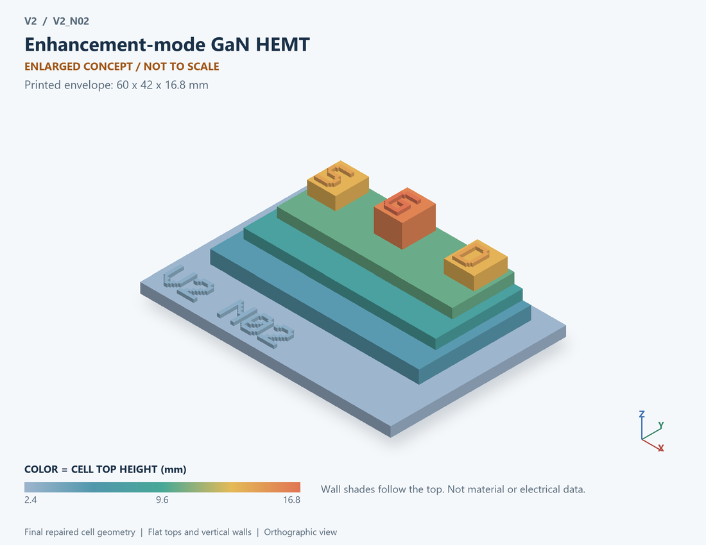
Download STL / 下载 Top view / 俯视
Printed features / 实物结构
- BUF: Buffer / substrate ledge
缓冲层/衬底台阶 - GAN: GaN channel region
GaN沟道区 - BAR: Barrier / interface marker
势垒/界面标记 - S: Electrode S
电极 S - G: Electrode G
电极 G - D: Electrode D
电极 D - 2DEG: The conductive interface is conceptual; no specific enhancement-mode gate technology is certified
导电界面为概念示意；不认定特定增强型栅工艺
Full source notes / 完整来源说明Teaching scope / 教学范围
Show source, drain, barrier, channel and gate-control region; enhancement-mode realization is unspecified, so do not identify p-GaN, recessed-gate or cascode fabrication as verified. Teaching geometry is enlarged and not to scale. It is not foundry geometry, a solved local field, or an electrically functional printed component.
展示源漏、势垒、沟道和栅控区；增强型实现方式未确定，不把p-GaN、凹槽栅或级联结构称为已验证工艺。教学几何经放大且不按真实比例；不是晶圆厂几何、局部场解或可工作的打印电子元件。
Teaching decomposition of the source model. The generated manifest, not this suggested parts list, identifies features physically present in each STL.
原模型的教学结构分解。各STL实际具备的形体应以生成清单为准，不把本建议部件表等同于全部实体印记。
- Support and buffer concept
支撑与缓冲层概念 - GaN channel material
GaN沟道材料 - Heterojunction barrier
异质结势垒 - Enlarged channel sheet beneath the barrier
势垒下放大的沟道薄层 - Gate-control region, implementation unspecified
栅控区，实现形式未指定 - Source contact
源接触 - Drain contact
漏接触
V2_N03 · Silicon superjunction MOSFET
硅超结MOSFET
physical_device · legacy
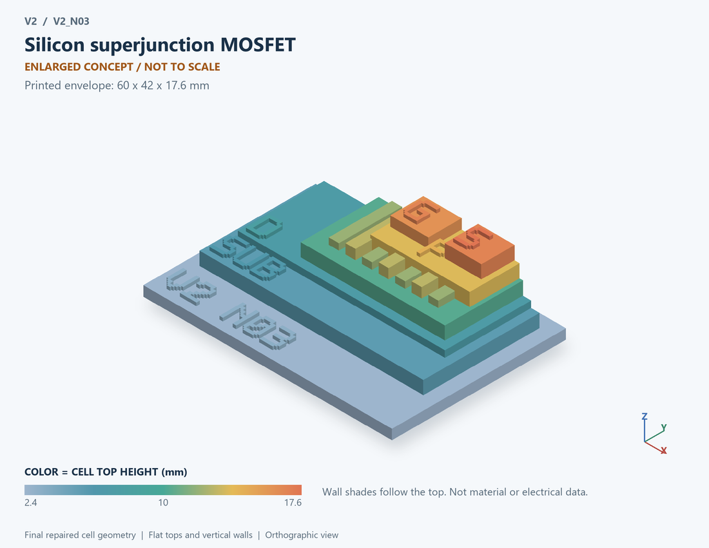
Download STL / 下载 Top view / 俯视
Printed features / 实物结构
- SUB: Exposed substrate ledge
外露衬底台阶 - D: Bottom drain
底部漏极 - DR: Vertical drift layer
垂直漂移层 - P: Alternating superjunction column
交替超结柱 - N: Alternating superjunction column
交替超结柱 - P: Alternating superjunction column
交替超结柱 - N: Alternating superjunction column
交替超结柱 - P: Alternating superjunction column
交替超结柱 - N: Alternating superjunction column
交替超结柱 - P: Alternating superjunction column
交替超结柱 - P: Body region
体区 - S: Top source
顶部源极 - G: Insulated gate
绝缘栅
Full source notes / 完整来源说明Teaching scope / 教学范围
Alternating P/N drift pillars distinguish this concept from an ordinary MOSFET; no charge-balance, avalanche or manufacturing dimensions are solved. Teaching geometry is enlarged and not to scale. It is not foundry geometry, a solved local field, or an electrically functional printed component.
交替P/N漂移柱区别于普通MOS；未求解电荷平衡、雪崩或制造尺寸。教学几何经放大且不按真实比例；不是晶圆厂几何、局部场解或可工作的打印电子元件。
Teaching decomposition of the source model. The generated manifest, not this suggested parts list, identifies features physically present in each STL.
原模型的教学结构分解。各STL实际具备的形体应以生成清单为准，不把本建议部件表等同于全部实体印记。
- Top source contact
顶面源接触 - Body and channel
体区与沟道 - Insulated channel gate
绝缘沟道栅 - P-type drift pillars
P型漂移柱 - N-type drift pillars
N型漂移柱 - Backside drain
背面漏极
V2_N04 · IGBT
IGBT
physical_device · legacy
Download STL / 下载 Top view / 俯视
Printed features / 实物结构
- SUB: Exposed substrate ledge
外露衬底台阶 - P: P-type bottom collector / hole-injection layer
P型底部集电极/空穴注入层 - DR: Vertical drift layer
垂直漂移层 - P: Body region
体区 - E: Top emitter
顶部发射极 - G: Insulated gate
绝缘栅
Full source notes / 完整来源说明Teaching scope / 教学范围
Include a P-type collector/injector beneath the N drift region; this must not be a relabeled MOSFET drain. Carrier injection and tail current are only simplified behavioral examples. Teaching geometry is enlarged and not to scale. It is not foundry geometry, a solved local field, or an electrically functional printed component.
N漂移区下应有P型集电极注入层，不能将MOS漏极简单改名；载流子注入及尾流仅为简化行为示例。教学几何经放大且不按真实比例；不是晶圆厂几何、局部场解或可工作的打印电子元件。
Teaching decomposition of the source model. The generated manifest, not this suggested parts list, identifies features physically present in each STL.
原模型的教学结构分解。各STL实际具备的形体应以生成清单为准，不把本建议部件表等同于全部实体印记。
- Top emitter contact
顶面发射极接触 - Channel/body region
沟道体区 - Insulated gate
绝缘栅 - Voltage-supporting drift
承压漂移区 - Collector injection layer
集电极注入层 - Backside collector contact
背面集电极接触
V2_N05 · SiC JBS rectifier
SiC JBS整流二极管
physical_device · legacy
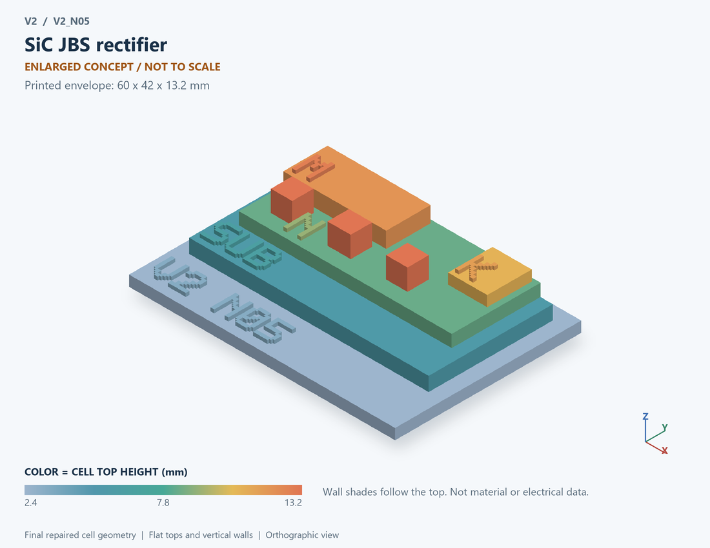
Download STL / 下载 Top view / 俯视
Printed features / 实物结构
- SUB: Exposed substrate ledge
外露衬底台阶 - N: Semiconductor drift region
半导体漂移区 - M: Metal / semiconductor contact
金属/半导体接触 - K: Cathode contact
阴极接触 - P: Junction-barrier island
结势垒P型岛 - P: Junction-barrier island
结势垒P型岛 - P: Junction-barrier island
结势垒P型岛
Full source notes / 完整来源说明Teaching scope / 教学范围
Place P shielding islands beside Schottky-contact windows in an N drift region; enlarged geometry does not establish electric-field shielding or breakdown voltage. Teaching geometry is enlarged and not to scale. It is not foundry geometry, a solved local field, or an electrically functional printed component.
N漂移区中的肖特基接触窗口旁配置P屏蔽岛；放大几何不证明电场屏蔽或击穿电压。教学几何经放大且不按真实比例；不是晶圆厂几何、局部场解或可工作的打印电子元件。
Teaching decomposition of the source model. The generated manifest, not this suggested parts list, identifies features physically present in each STL.
原模型的教学结构分解。各STL实际具备的形体应以生成清单为准，不把本建议部件表等同于全部实体印记。
- Top Schottky electrode
顶面肖特基电极 - PN shielding islands
PN屏蔽岛 - Schottky contact windows
肖特基接触窗口 - Drift region
漂移区 - Backside ohmic contact
背面欧姆接触
V2_N06 · FinFET
FinFET
physical_device · legacy
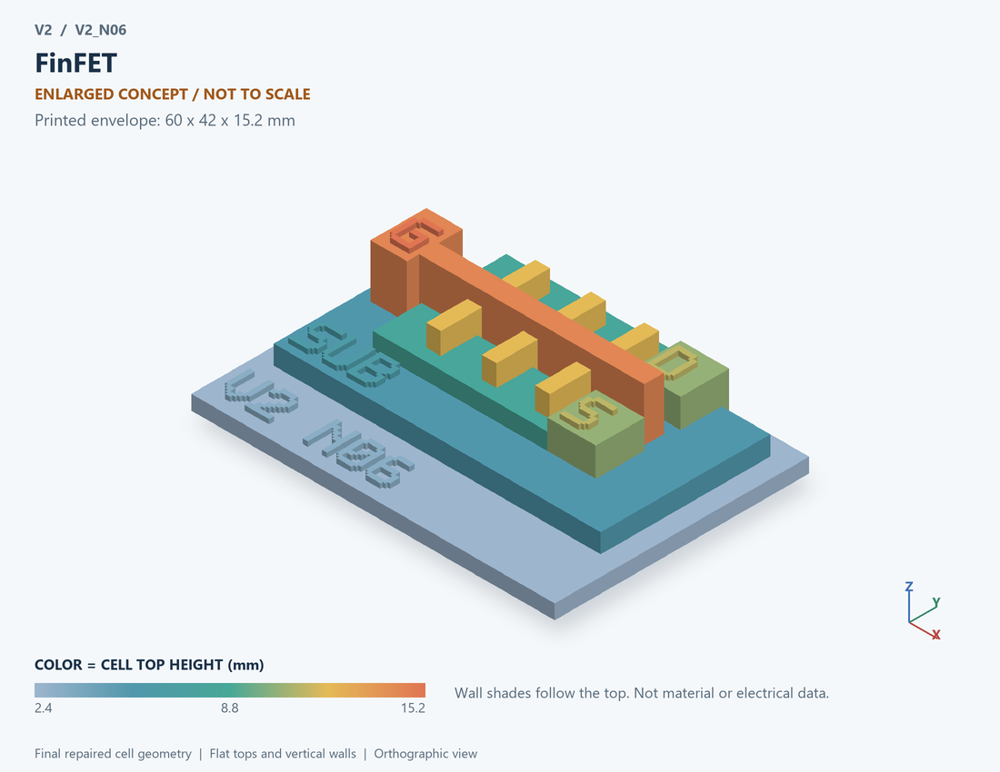
Download STL / 下载 Top view / 俯视
Printed features / 实物结构
- SUB: Exposed substrate ledge
外露衬底台阶 - FIN: Semiconductor fin
半导体鳍 - FIN: Semiconductor fin
半导体鳍 - FIN: Semiconductor fin
半导体鳍 - G: Gate crossing fin channels
跨越鳍沟道的栅 - G: Exposed gate pad, joined to crossing gate
与横跨栅连接的外露栅垫 - S: Source joining the first ends of all fins; lowered cutaway exposes fins
连接所有鳍第一端的源区；降低剖切面以露出鳍 - D: Drain joining the opposite ends of all fins; lowered cutaway exposes fins
连接所有鳍另一端的漏区；降低剖切面以露出鳍 - S: Exposed source contact pad
外露源接触垫 - D: Exposed drain contact pad
外露漏接触垫
Full source notes / 完整来源说明Teaching scope / 教学范围
Gate wraps a raised fin in a generic multi-gate teaching structure; no BSIM-CMG, fin dimensions, substrate isolation or specific node is inferred. Teaching geometry is enlarged and not to scale. It is not foundry geometry, a solved local field, or an electrically functional printed component.
栅绕凸起鳍部的通用多栅教学结构；不推断BSIM-CMG、鳍尺寸、衬底隔离或具体节点。教学几何经放大且不按真实比例；不是晶圆厂几何、局部场解或可工作的打印电子元件。
Teaching decomposition of the source model. The generated manifest, not this suggested parts list, identifies features physically present in each STL.
原模型的教学结构分解。各STL实际具备的形体应以生成清单为准，不把本建议部件表等同于全部实体印记。
- Substrate/support
衬底支撑 - Raised silicon channel fin
凸起硅沟道鳍 - Gate dielectric around fin
鳍周围栅介质 - Multi-face gate concept
多面栅概念 - Source end of fin
鳍源端 - Drain end of fin
鳍漏端
V2_N07 · a-IGZO thin-film transistor
a-IGZO TFT
physical_device · legacy
Download STL / 下载 Top view / 俯视
Printed features / 实物结构
- SUB: Exposed substrate ledge
外露衬底台阶 - G: Exposed lower gate ledge
外露底栅台阶 - OX: Gate dielectric
栅介质 - IGZO: Active film / channel joining both contacts
连接两接触的有源薄膜/沟道 - S: Source contacting one end of the active layer
接触有源层一端的源接触 - D: Drain contacting the other end of the active layer
接触有源层另一端的漏接触
Full source notes / 完整来源说明Teaching scope / 教学范围
A representative thin-film layer stack, not a specific top-gate/bottom-gate paper device or measured oxide microstructure. Teaching geometry is enlarged and not to scale. It is not foundry geometry, a solved local field, or an electrically functional printed component.
代表性薄膜层堆叠，不是某论文顶栅/底栅器件或实测氧化物微结构。教学几何经放大且不按真实比例；不是晶圆厂几何、局部场解或可工作的打印电子元件。
Teaching decomposition of the source model. The generated manifest, not this suggested parts list, identifies features physically present in each STL.
原模型的教学结构分解。各STL实际具备的形体应以生成清单为准，不把本建议部件表等同于全部实体印记。
- Insulating support
绝缘支撑 - Thin semiconductor channel
薄半导体沟道 - Gate insulator
栅绝缘层 - Control electrode
控制电极 - Source contact
源接触 - Drain contact
漏接触
V2_N08 · Organic polymer TFT
有机聚合物TFT
physical_device · legacy
Download STL / 下载 Top view / 俯视
Printed features / 实物结构
- SUB: Exposed substrate ledge
外露衬底台阶 - G: Exposed lower gate ledge
外露底栅台阶 - OX: Gate dielectric
栅介质 - ORG: Active film / channel joining both contacts
连接两接触的有源薄膜/沟道 - S: Source contacting one end of the active layer
接触有源层一端的源接触 - D: Drain contacting the other end of the active layer
接触有源层另一端的漏接触
Full source notes / 完整来源说明Teaching scope / 教学范围
The organic film is a generic channel layer; polymer chemistry, morphology and contact injection are not reconstructed. Teaching geometry is enlarged and not to scale. It is not foundry geometry, a solved local field, or an electrically functional printed component.
有机膜为通用沟道层；不重建聚合物化学、形貌或接触注入机制。教学几何经放大且不按真实比例；不是晶圆厂几何、局部场解或可工作的打印电子元件。
Teaching decomposition of the source model. The generated manifest, not this suggested parts list, identifies features physically present in each STL.
原模型的教学结构分解。各STL实际具备的形体应以生成清单为准，不把本建议部件表等同于全部实体印记。
- Substrate/support
衬底支撑 - Polymer channel film
聚合物沟道膜 - Gate insulator
栅绝缘层 - Control electrode
控制电极 - Source contact
源接触 - Drain contact
漏接触
V2_N09 · Contact-limited MoS2 FET
MoS2接触受限FET
physical_device · legacy
Download STL / 下载 Top view / 俯视
Printed features / 实物结构
- SUB: Exposed substrate ledge
外露衬底台阶 - G: Exposed lower gate ledge
外露底栅台阶 - OX: Gate dielectric
栅介质 - MOS2: Active film / channel joining both contacts
连接两接触的有源薄膜/沟道 - S: Source contacting one end of the active layer
接触有源层一端的源接触 - D: Drain contacting the other end of the active layer
接触有源层另一端的漏接触
Full source notes / 完整来源说明Teaching scope / 教学范围
An enlarged 2D sheet and contact regions teach contact limitation; layer count, contact barrier and microscopic defects remain unspecified. Teaching geometry is enlarged and not to scale. It is not foundry geometry, a solved local field, or an electrically functional printed component.
放大的二维片及接触区用于解释接触限制；层数、接触势垒及微观缺陷未指定。教学几何经放大且不按真实比例；不是晶圆厂几何、局部场解或可工作的打印电子元件。
Teaching decomposition of the source model. The generated manifest, not this suggested parts list, identifies features physically present in each STL.
原模型的教学结构分解。各STL实际具备的形体应以生成清单为准，不把本建议部件表等同于全部实体印记。
- Supporting substrate
支撑衬底 - Enlarged two-dimensional channel sheet
放大的二维沟道片 - Gate dielectric
栅介质 - Electrostatic gate
静电控制栅 - Source contact region
源接触区 - Drain contact region
漏接触区
V2_N10 · Ambipolar graphene FET
石墨烯双极性FET
physical_device · legacy
Download STL / 下载 Top view / 俯视
Printed features / 实物结构
- SUB: Exposed substrate ledge
外露衬底台阶 - G: Exposed lower gate ledge
外露底栅台阶 - OX: Gate dielectric
栅介质 - GR: Active film / channel joining both contacts
连接两接触的有源薄膜/沟道 - S: Source contacting one end of the active layer
接触有源层一端的源接触 - D: Drain contacting the other end of the active layer
接触有源层另一端的漏接触
Full source notes / 完整来源说明Teaching scope / 教学范围
Use a sheet, not N/P diffusion blocks implying a silicon junction; the simulation is an ambipolar conductance law, not a band-structure solution. Teaching geometry is enlarged and not to scale. It is not foundry geometry, a solved local field, or an electrically functional printed component.
采用薄片结构，避免用N/P扩散块暗示硅PN结；仿真为双极性电导律，不是能带求解。教学几何经放大且不按真实比例；不是晶圆厂几何、局部场解或可工作的打印电子元件。
Teaching decomposition of the source model. The generated manifest, not this suggested parts list, identifies features physically present in each STL.
原模型的教学结构分解。各STL实际具备的形体应以生成清单为准，不把本建议部件表等同于全部实体印记。
- Supporting substrate
支撑衬底 - Enlarged channel sheet
放大的沟道片 - Gate insulator
栅介质 - Electrostatic gate
静电控制栅 - Source contact
源接触 - Drain contact
漏接触
V2_N11 · Ballistic carbon-nanotube FET
碳纳米管弹道FET
physical_device · legacy
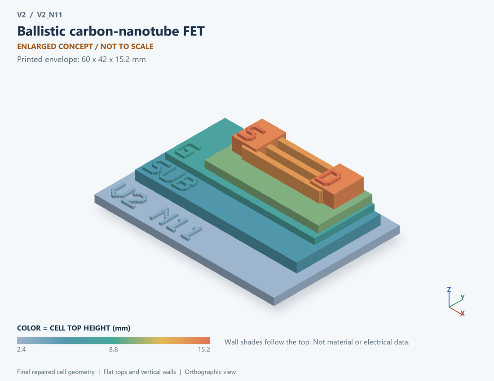
Download STL / 下载 Top view / 俯视
Printed features / 实物结构
- SUB: Exposed substrate ledge
外露衬底台阶 - G: Exposed lower gate ledge
外露底栅台阶 - OX: Gate dielectric
栅介质 - CNT: Enlarged nanotube channel ridge
放大纳米管沟道脊 - CNT: Enlarged nanotube channel ridge
放大纳米管沟道脊 - CNT: Enlarged nanotube channel ridge
放大纳米管沟道脊 - S: Source contacting one end of the active layer
接触有源层一端的源接触 - D: Drain contacting the other end of the active layer
接触有源层另一端的漏接触
Full source notes / 完整来源说明Teaching scope / 教学范围
Use a magnified tube between contacts; tube count and diameter are illustrative, not a microscopic reconstruction or scattering calculation. Teaching geometry is enlarged and not to scale. It is not foundry geometry, a solved local field, or an electrically functional printed component.
以接触间放大管状沟道表示；管数和直径为示意，不是微观重建或散射计算。教学几何经放大且不按真实比例；不是晶圆厂几何、局部场解或可工作的打印电子元件。
Teaching decomposition of the source model. The generated manifest, not this suggested parts list, identifies features physically present in each STL.
原模型的教学结构分解。各STL实际具备的形体应以生成清单为准，不把本建议部件表等同于全部实体印记。
- Substrate/support
衬底支撑 - Enlarged nanotube channel
放大纳米管沟道 - Gate insulation
栅绝缘 - Electrostatic control
静电控制栅 - Source contact
源接触 - Drain contact
漏接触
V2_N12 · Ferroelectric FET memory cell
FeFET铁电存储晶体管
physical_device · legacy
Download STL / 下载 Top view / 俯视
Printed features / 实物结构
- SUB: Exposed substrate ledge
外露衬底台阶 - G: Exposed lower gate ledge
外露底栅台阶 - FE: Ferroelectric gate stack
铁电栅叠层 - CH: Active film / channel joining both contacts
连接两接触的有源薄膜/沟道 - S: Source contacting one end of the active layer
接触有源层一端的源接触 - D: Drain contacting the other end of the active layer
接触有源层另一端的漏接触
Full source notes / 完整来源说明Teaching scope / 教学范围
A gate-stack ferroelectric layer teaches polarization-driven threshold shift; arrows are state symbols, not solved domain texture or a specified material stack. Teaching geometry is enlarged and not to scale. It is not foundry geometry, a solved local field, or an electrically functional printed component.
栅堆中的铁电层表示极化引起阈值移动；箭头为状态符号，不是求解的畴纹理或指定材料堆叠。教学几何经放大且不按真实比例；不是晶圆厂几何、局部场解或可工作的打印电子元件。
Teaching decomposition of the source model. The generated manifest, not this suggested parts list, identifies features physically present in each STL.
原模型的教学结构分解。各STL实际具备的形体应以生成清单为准，不把本建议部件表等同于全部实体印记。
- Semiconductor body/channel
半导体体沟道区 - Source region
源区 - Drain region
漏区 - Gate interfacial insulation
栅界面绝缘层 - Enlarged ferroelectric layer
放大的铁电层 - Control electrode
控制栅 - Symbolic polarization direction
极化方向符号
V2_N13 · Oxide RRAM cell
氧化物RRAM
physical_device · legacy
Download STL / 下载 Top view / 俯视
Printed features / 实物结构
- SUB: Exposed substrate ledge
外露衬底台阶 - BE: Bottom electrode
下电极 - OX: Switching oxide
阻变氧化层 - TE: Top electrode
上电极 - FIL: Illustrative conductive-filament ridge
示意导电细丝脊
Full source notes / 完整来源说明Teaching scope / 教学范围
A visible filament is a teaching symbol for the state variable, not a predicted filament location, shape or formation mechanism. Teaching geometry is enlarged and not to scale. It is not foundry geometry, a solved local field, or an electrically functional printed component.
可见细丝是状态变量的教学符号，不是预测的细丝位置、形状或成形机制。教学几何经放大且不按真实比例；不是晶圆厂几何、局部场解或可工作的打印电子元件。
Teaching decomposition of the source model. The generated manifest, not this suggested parts list, identifies features physically present in each STL.
原模型的教学结构分解。各STL实际具备的形体应以生成清单为准，不把本建议部件表等同于全部实体印记。
- Top electrode
顶电极 - Switching oxide
开关氧化层 - Symbolic conductive path
导电路径符号 - Bottom electrode
底电极
V2_N14 · Phase-change memory cell
PCM相变存储单元
physical_device · legacy
Download STL / 下载 Top view / 俯视
Printed features / 实物结构
- SUB: Exposed substrate ledge
外露衬底台阶 - BE: Bottom electrode
下电极 - PCM: Phase-change region
相变区域 - TE: Top electrode
上电极
Full source notes / 完整来源说明Teaching scope / 教学范围
Heater and active volume are conceptual; the lumped thermal model does not produce spatial melting, crystallization domains or a fabricated alloy stack. Teaching geometry is enlarged and not to scale. It is not foundry geometry, a solved local field, or an electrically functional printed component.
加热器和活性体积为概念；集总热模型不产生空间熔化、结晶畴或已制造合金堆叠。教学几何经放大且不按真实比例；不是晶圆厂几何、局部场解或可工作的打印电子元件。
Teaching decomposition of the source model. The generated manifest, not this suggested parts list, identifies features physically present in each STL.
原模型的教学结构分解。各STL实际具备的形体应以生成清单为准，不把本建议部件表等同于全部实体印记。
- Top electrode
顶电极 - Phase-change active volume
相变活性区 - Constricted heater concept
缩窄加热器概念 - Bottom electrode
底电极 - Symbolic heat-flow path
热流路径符号
V2_N15 · Magnetic tunnel junction
MTJ磁隧道结
physical_device · legacy
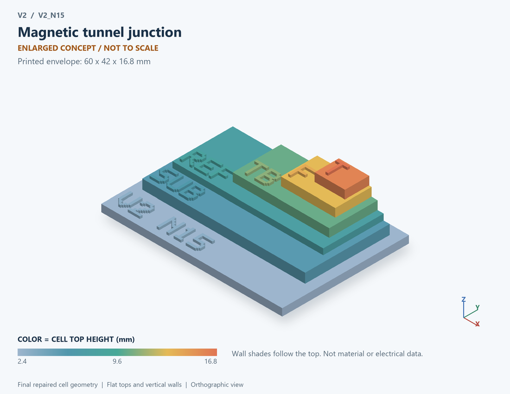
Download STL / 下载 Top view / 俯视
Printed features / 实物结构
- SUB: Exposed substrate ledge
外露衬底台阶 - REF: Reference magnetic layer / lower contact ledge
参考磁层/下接触台阶 - TB: Tunnel-barrier dielectric
隧穿势垒介质 - F: Free magnetic layer
自由磁层 - T: Top contact above the free layer
自由层上方的顶接触
Full source notes / 完整来源说明Teaching scope / 教学范围
Separate fixed magnetic layer, tunnel barrier and free layer; magnetization arrows are state labels, not an LLG field or magnetic-domain calculation. Teaching geometry is enlarged and not to scale. It is not foundry geometry, a solved local field, or an electrically functional printed component.
区分固定磁层、隧穿层和自由层；磁化箭头是状态标记，不是LLG场或磁畴计算。教学几何经放大且不按真实比例；不是晶圆厂几何、局部场解或可工作的打印电子元件。
Teaching decomposition of the source model. The generated manifest, not this suggested parts list, identifies features physically present in each STL.
原模型的教学结构分解。各STL实际具备的形体应以生成清单为准，不把本建议部件表等同于全部实体印记。
- Top electrode
顶电极 - Free magnetic layer
自由磁层 - Insulating tunnel barrier
绝缘隧穿层 - Reference magnetic layer
参考磁层 - Bottom electrode
底电极 - Symbolic parallel/antiparallel state
平行/反平行状态符号
V2_N16 · Ferroelectric capacitor
铁电电容
passive · legacy
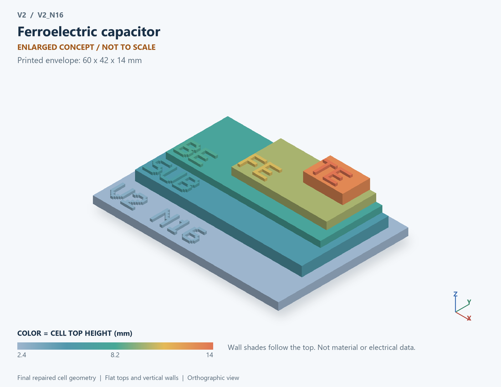
Download STL / 下载 Top view / 俯视
Printed features / 实物结构
- SUB: Exposed substrate ledge
外露衬底台阶 - BE: Bottom electrode
下电极 - FE: Ferroelectric dielectric
铁电介质 - TE: Top electrode
上电极
Full source notes / 完整来源说明Teaching scope / 教学范围
Show a ferroelectric dielectric between electrodes; polarization markers do not identify a material or reproduce spatial switching kinetics. Teaching geometry is enlarged and not to scale. It is not foundry geometry, a solved local field, or an electrically functional printed component.
展示两电极之间的铁电介质；极化标记不指定材料，也不复现空间开关动力学。教学几何经放大且不按真实比例；不是晶圆厂几何、局部场解或可工作的打印电子元件。
Teaching decomposition of the source model. The generated manifest, not this suggested parts list, identifies features physically present in each STL.
原模型的教学结构分解。各STL实际具备的形体应以生成清单为准，不把本建议部件表等同于全部实体印记。
- Top electrode
顶电极 - Ferroelectric dielectric
铁电介质 - Symbolic polarization
极化符号 - Bottom electrode
底电极
V2_N17 · Nitride LED
氮化物LED
physical_device · legacy
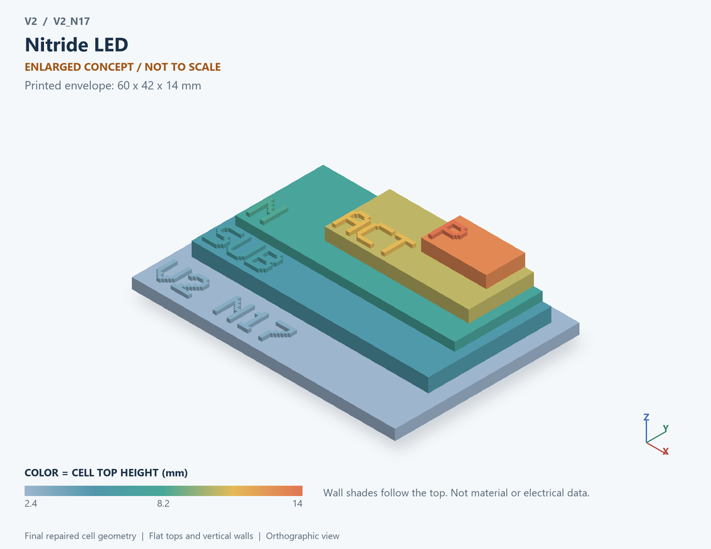
Download STL / 下载 Top view / 俯视
Printed features / 实物结构
- SUB: Exposed substrate ledge
外露衬底台阶 - N: Lower injection / cladding region
下部注入/包层区 - ACT: Active emission layer
有源发光层 - P: Upper injection / cladding region
上部注入/包层区
Full source notes / 完整来源说明Teaching scope / 教学范围
Generic P/active/N layers and light-output direction; quantum-well count, band offsets and extraction optics are not reconstructed. Teaching geometry is enlarged and not to scale. It is not foundry geometry, a solved local field, or an electrically functional printed component.
通用P/活性/N层与出光方向；不重建量子阱数、能带偏移或出光光学结构。教学几何经放大且不按真实比例；不是晶圆厂几何、局部场解或可工作的打印电子元件。
Teaching decomposition of the source model. The generated manifest, not this suggested parts list, identifies features physically present in each STL.
原模型的教学结构分解。各STL实际具备的形体应以生成清单为准，不把本建议部件表等同于全部实体印记。
- Hole-side semiconductor
空穴侧半导体 - Radiative active layer
辐射复合活性层 - Electron-side semiconductor
电子侧半导体 - Anode contact
阳极接触 - Cathode contact
阴极接触 - Optical-output direction
出光方向
V2_N18 · Quantum-dot LED
量子点LED
physical_device · legacy
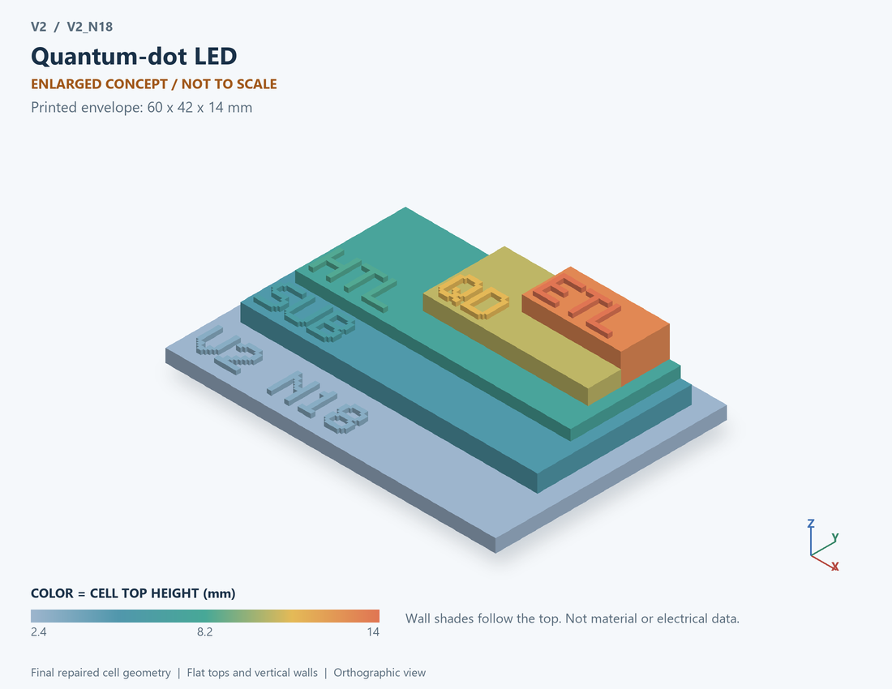
Download STL / 下载 Top view / 俯视
Printed features / 实物结构
- SUB: Exposed substrate ledge
外露衬底台阶 - HTL: Hole transport layer
空穴传输层 - QD: Quantum-dot emissive layer
量子点发光层 - ETL: Electron transport layer
电子传输层
Full source notes / 完整来源说明Teaching scope / 教学范围
Use transport layers around a dot-emission layer; do not copy a generic silicon PN junction or claim an actual dot-size distribution. Teaching geometry is enlarged and not to scale. It is not foundry geometry, a solved local field, or an electrically functional printed component.
发光量子点层两侧设置输运层；不直接复制通用硅PN结，不声称真实粒径分布。教学几何经放大且不按真实比例；不是晶圆厂几何、局部场解或可工作的打印电子元件。
Teaching decomposition of the source model. The generated manifest, not this suggested parts list, identifies features physically present in each STL.
原模型的教学结构分解。各STL实际具备的形体应以生成清单为准，不把本建议部件表等同于全部实体印记。
- Hole-side electrode
空穴侧电极 - Hole transport layer concept
空穴输运层概念 - Enlarged emitting quantum dots
放大的发光量子点 - Electron transport layer concept
电子输运层概念 - Electron-side electrode
电子侧电极 - Optical-output direction
出光方向
V2_N19 · PIN photodetector
PIN光电探测器
physical_device · legacy
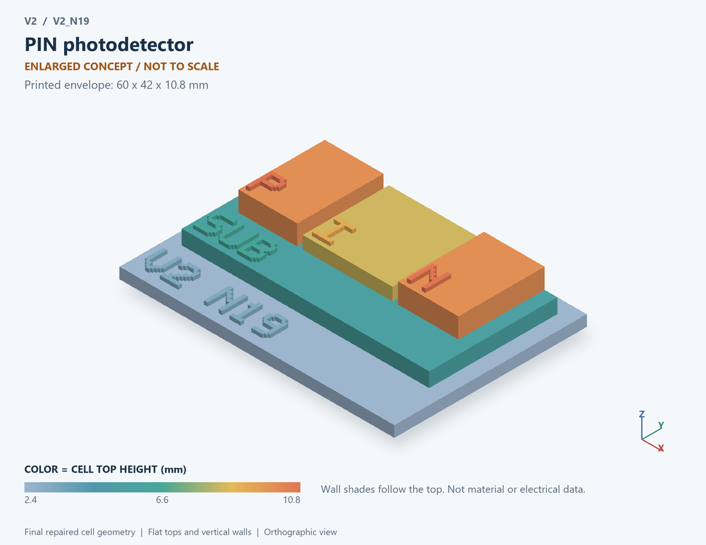
Download STL / 下载 Top view / 俯视
Printed features / 实物结构
- SUB: Exposed substrate ledge
外露衬底台阶 - P: P region
P区 - I: Intrinsic region
本征区 - N: N region
N区
Full source notes / 完整来源说明Teaching scope / 教学范围
Show an intrinsic absorption region between P and N; incoming light is an optical boundary, not a third electrical terminal. Teaching geometry is enlarged and not to scale. It is not foundry geometry, a solved local field, or an electrically functional printed component.
展示P与N之间的本征吸收区；入射光为光学边界，不是第三个电端。教学几何经放大且不按真实比例；不是晶圆厂几何、局部场解或可工作的打印电子元件。
Teaching decomposition of the source model. The generated manifest, not this suggested parts list, identifies features physically present in each STL.
原模型的教学结构分解。各STL实际具备的形体应以生成清单为准，不把本建议部件表等同于全部实体印记。
- P-side region
P侧区域 - Enlarged absorption region
放大的吸收区 - N-side region
N侧区域 - Anode and cathode
阳极与阴极 - Optical input direction
入光方向
V2_N20 · Single-junction photovoltaic cell
单结光伏电池
physical_device · legacy
Download STL / 下载 Top view / 俯视
Printed features / 实物结构
- SUB: Exposed substrate ledge
外露衬底台阶 - P: P-type region / anode
P型区/阳极 - N: N-type region / cathode
N型区/阴极 - J: Exposed junction marker
外露结界面标记
Full source notes / 完整来源说明Teaching scope / 教学范围
Generic illuminated single junction; the single-diode law does not determine cell material, texturing or multilayer composition. Teaching geometry is enlarged and not to scale. It is not foundry geometry, a solved local field, or an electrically functional printed component.
通用受光单结；单二极管方程不确定电池材料、织构或多层成分。教学几何经放大且不按真实比例；不是晶圆厂几何、局部场解或可工作的打印电子元件。
Teaching decomposition of the source model. The generated manifest, not this suggested parts list, identifies features physically present in each STL.
原模型的教学结构分解。各STL实际具备的形体应以生成清单为准，不把本建议部件表等同于全部实体印记。
- Light-facing electrode
受光侧电极 - One junction side
结的一侧 - Photocarrier separation region
光生载流子分离区 - Opposite junction side
结的另一侧 - Rear electrode
背面电极 - Incident optical power
入射光功率
V2_N21 · Thermoelectric generator cell
热电发电单元
physical_device · legacy
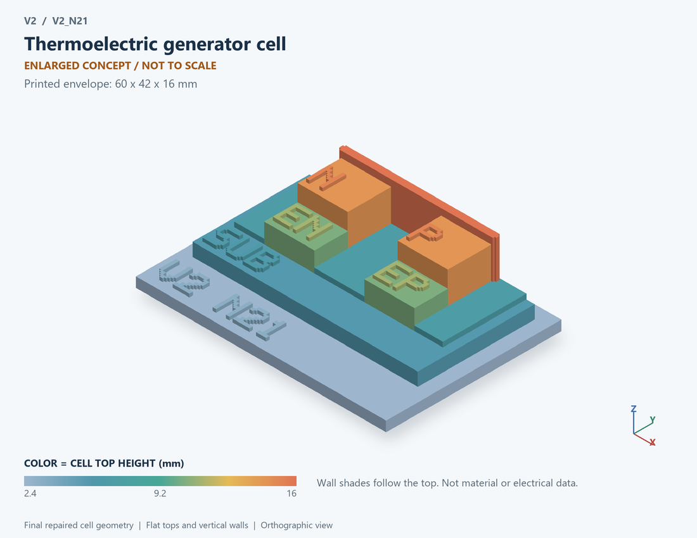
Download STL / 下载 Top view / 俯视
Printed features / 实物结构
- SUB: Exposed substrate ledge
外露衬底台阶 - COLD: Cold-side thermal plate
冷端热边界板 - N: N-type thermoelectric leg
N型热电腿 - P: P-type thermoelectric leg
P型热电腿 - EN: Electrical terminal N (not the doping label)
电端N（不是掺杂标签） - EP: Electrical terminal P (not the doping label)
电端P（不是掺杂标签） - HOT: Raised hot-side boundary marker
凸起热端边界标记 - PORT: HOT/COLD are thermal boundaries; electrical P/N ports are distinct from doping labels and are documented in the source mapping
HOT/COLD为热边界；电气P/N端口与掺杂标记分开，详见源目录映射
Full source notes / 完整来源说明Teaching scope / 教学范围
Keep electrical P/N terminals on interconnects separate from HOT/COLD thermal boundaries; the two thermal plates must not be mislabeled as the two electrical terminals. Teaching geometry is enlarged and not to scale. It is not foundry geometry, a solved local field, or an electrically functional printed component.
电气P/N端放在互连处，并与HOT/COLD热边界分离；不得把两块冷热板当成两个电端。教学几何经放大且不按真实比例；不是晶圆厂几何、局部场解或可工作的打印电子元件。
Teaching decomposition of the source model. The generated manifest, not this suggested parts list, identifies features physically present in each STL.
原模型的教学结构分解。各STL实际具备的形体应以生成清单为准，不把本建议部件表等同于全部实体印记。
- Hot thermal boundary
热端边界 - Cold thermal boundary
冷端边界 - P-type thermoelectric leg
P型热电腿 - N-type thermoelectric leg
N型热电腿 - Electrical series interconnects
电气串联互连 - Thermal contact with electrical insulation
导热电绝缘接触
V2_N22 · On-chip coupled transformer
片上耦合变压器
passive · legacy
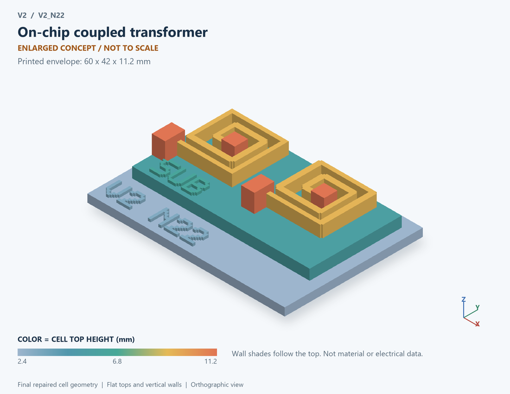
Download STL / 下载 Top view / 俯视
Printed features / 实物结构
- SUB: Exposed substrate ledge
外露衬底台阶 - PRI: Primary open spiral
初级开口螺旋 - 1: Winding outer terminal
绕组外端 - 2: Winding inner terminal
绕组内端 - SEC: Secondary open spiral
次级开口螺旋 - 3: Winding outer terminal
绕组外端 - 4: Winding inner terminal
绕组内端 - COUP: Two electrically separate open windings shown side by side for clarity; no coupling magnitude or actual winding layout asserted
两组电气独立的开口绕组并列展示；不据此认定耦合量或实际绕组版图
Full source notes / 完整来源说明Teaching scope / 教学范围
Show two isolated windings with four distinct ends, not electrically closed decorative rings; no winding geometry or coupling factor is extracted from layout. Teaching geometry is enlarged and not to scale. It is not foundry geometry, a solved local field, or an electrically functional printed component.
展示两组隔离绕组与四个独立端点，不用闭合装饰环冒充绕组；未从版图提取绕组几何或耦合系数。教学几何经放大且不按真实比例；不是晶圆厂几何、局部场解或可工作的打印电子元件。
Teaching decomposition of the source model. The generated manifest, not this suggested parts list, identifies features physically present in each STL.
原模型的教学结构分解。各STL实际具备的形体应以生成清单为准，不把本建议部件表等同于全部实体印记。
- First winding with two ends
带两端的初级绕组 - Second winding with two ends
带两端的次级绕组 - Electrical separation
电气间隔 - Conceptual substrate coupling context
衬底耦合概念 - Four separately labeled ports
四个独立端标签
V2_N23 · Through-silicon via
TSV硅通孔
interconnect · legacy
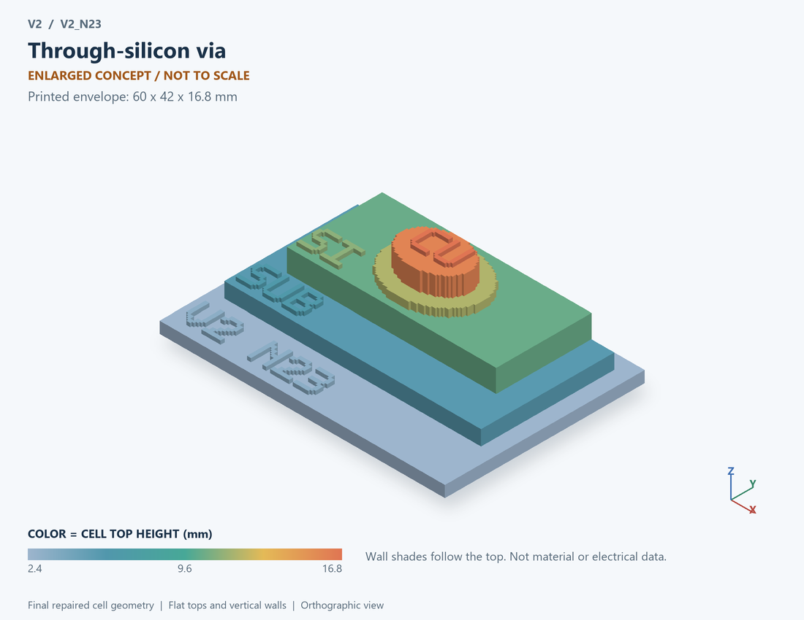
Download STL / 下载 Top view / 俯视
Printed features / 实物结构
- SUB: Exposed substrate ledge
外露衬底台阶 - SI: Silicon cross-section
硅剖面 - LIN: Via liner ring ledge
通孔衬层环形台阶 - CU: Via conductor; enlarged exposed end
通孔导体；放大外露端面
Full source notes / 完整来源说明Teaching scope / 教学范围
Cross-section separates conductive via, insulating liner and silicon body; no real aspect ratio, stress or electromagnetic coupling is derived. Teaching geometry is enlarged and not to scale. It is not foundry geometry, a solved local field, or an electrically functional printed component.
剖面区分导电通孔、绝缘衬层与硅体；不推导真实深宽比、应力或电磁耦合。教学几何经放大且不按真实比例；不是晶圆厂几何、局部场解或可工作的打印电子元件。
Teaching decomposition of the source model. The generated manifest, not this suggested parts list, identifies features physically present in each STL.
原模型的教学结构分解。各STL实际具备的形体应以生成清单为准，不把本建议部件表等同于全部实体印记。
- Top electrical connection
顶部电连接 - Conductive via core
导电通孔芯 - Insulating sleeve
绝缘衬层 - Surrounding substrate
周围衬底 - Bottom electrical connection
底部电连接 - Substrate return
衬底回流端
V2_N24 · Mach-Zehnder electro-optic modulator
MZI电光调制器
physical_device · legacy
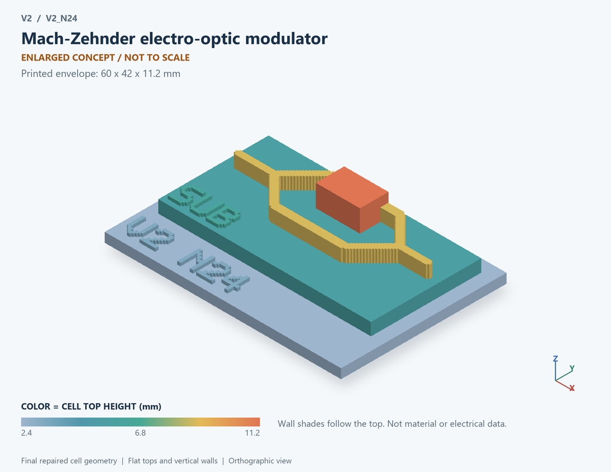
Download STL / 下载 Top view / 俯视
Printed features / 实物结构
- SUB: Exposed substrate ledge
外露衬底台阶 - WG: Interferometer waveguide arm
干涉仪波导臂 - WG: Interferometer waveguide arm
干涉仪波导臂 - RF: Electrode region beside one arm
一条臂旁的电极区
Full source notes / 完整来源说明Teaching scope / 教学范围
Two optical arms split and recombine; electrical G/RET and optical IN/OUT must be distinct. No waveguide mode, carrier or travelling-wave electrode solution is claimed. Teaching geometry is enlarged and not to scale. It is not foundry geometry, a solved local field, or an electrically functional printed component.
两条光臂分束后合束；电气G/RET与光学IN/OUT必须区分。不声称波导模式、载流子或行波电极求解。教学几何经放大且不按真实比例；不是晶圆厂几何、局部场解或可工作的打印电子元件。
Teaching decomposition of the source model. The generated manifest, not this suggested parts list, identifies features physically present in each STL.
原模型的教学结构分解。各STL实际具备的形体应以生成清单为准，不把本建议部件表等同于全部实体印记。
- Optical input splitter
输入分束器 - First optical path
第一光路 - Second optical path
第二光路 - Phase-control electrode
相位控制电极 - Electrical return
电气回流端 - Optical output combiner
输出合束器
V2_N25 · Semiconductor laser diode
半导体激光二极管
physical_device · legacy
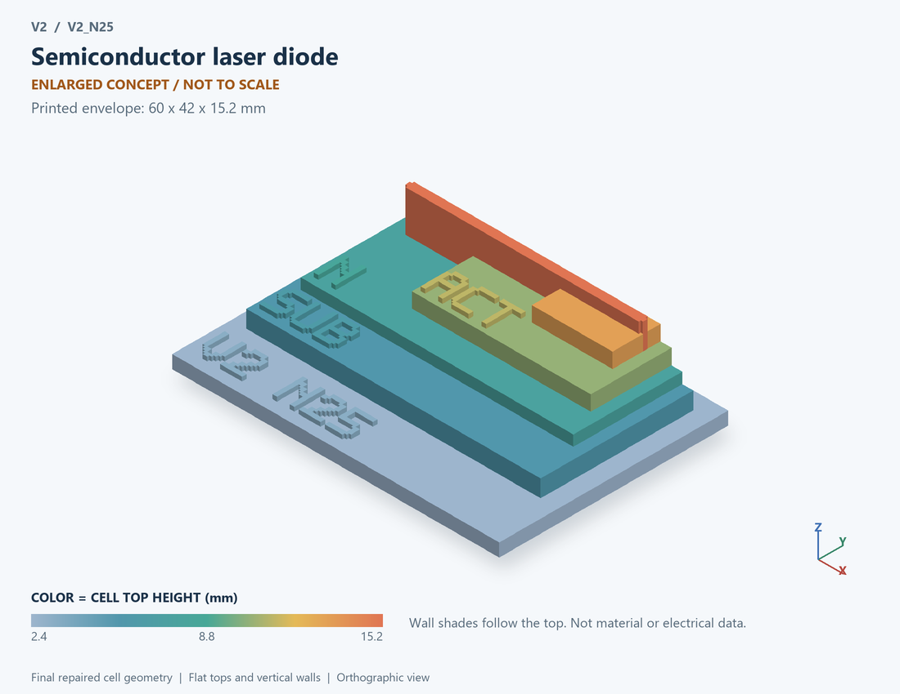
Download STL / 下载 Top view / 俯视
Printed features / 实物结构
- SUB: Exposed substrate ledge
外露衬底台阶 - N: Lower injection / cladding region
下部注入/包层区 - ACT: Active emission layer
有源发光层 - P: Upper injection / cladding region
上部注入/包层区 - CAV: Optical cavity ridge
光学腔脊
Full source notes / 完整来源说明Teaching scope / 教学范围
A generic active stripe and two cavity facets teach stimulated output; no DFB grating, mode profile or real layer thickness is specified. Teaching geometry is enlarged and not to scale. It is not foundry geometry, a solved local field, or an electrically functional printed component.
通用活性条带与两个腔端面用于解释激光输出；不指定DFB光栅、模式分布或真实层厚。教学几何经放大且不按真实比例；不是晶圆厂几何、局部场解或可工作的打印电子元件。
Teaching decomposition of the source model. The generated manifest, not this suggested parts list, identifies features physically present in each STL.
原模型的教学结构分解。各STL实际具备的形体应以生成清单为准，不把本建议部件表等同于全部实体印记。
- P-side layer/contact
P侧层与接触 - Active optical stripe
活性光条带 - N-side layer/contact
N侧层与接触 - First cavity end
第一腔端 - Output cavity end
出光腔端 - Optical output
光输出
V2_X01 · MOS gate charge and Miller coupling
MOS栅电荷与Miller耦合
mechanism_demo · legacy
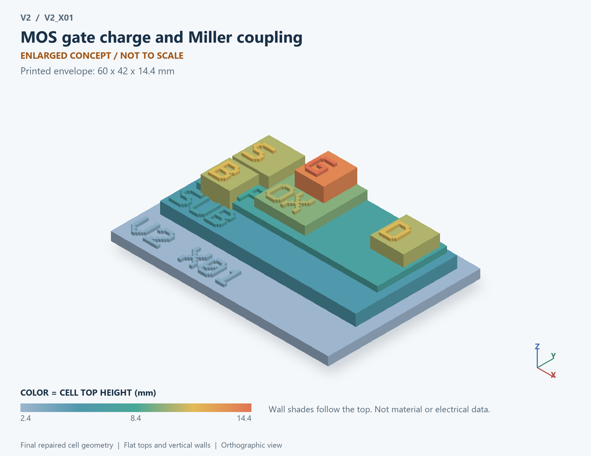
Download STL / 下载 Top view / 俯视
Printed features / 实物结构
- SUB: Exposed substrate ledge
外露衬底台阶 - P: Body well
体区/阱 - S: Source contact / implanted region
源极接触/注入区 - D: Drain contact / implanted region
漏极接触/注入区 - OX: Exposed gate dielectric ledge
外露栅介质台阶 - G: Gate electrode
栅电极 - B: Separate body contact, distinct from doping label
独立体接触，与掺杂标签区分 - POL: N-channel schematic
N沟道示意
Full source notes / 完整来源说明Teaching scope / 教学范围
Reuse a MOS teaching section with Cgs/Cgd relationship markers; capacitors are equivalent elements, not extra visible physical device layers. Teaching geometry is enlarged and not to scale. It is not foundry geometry, a solved local field, or an electrically functional printed component.
复用MOS剖面并标Cgs/Cgd关系；电容为等效元件，不是额外实体器件层。教学几何经放大且不按真实比例；不是晶圆厂几何、局部场解或可工作的打印电子元件。
Teaching decomposition of the source model. The generated manifest, not this suggested parts list, identifies features physically present in each STL.
原模型的教学结构分解。各STL实际具备的形体应以生成清单为准，不把本建议部件表等同于全部实体印记。
- Gate/source/drain teaching core
栅源漏教学核心 - Equivalent gate-source capacitance
等效栅源电容 - Equivalent Miller capacitance
等效米勒电容 - Gate-drive resistor relationship
栅驱电阻关系
V2_X02 · PN diode reverse recovery
PN二极管反向恢复
mechanism_demo · legacy
Download STL / 下载 Top view / 俯视
Printed features / 实物结构
- SUB: Exposed substrate ledge
外露衬底台阶 - P: P-type region / anode
P型区/阳极 - N: N-type region / cathode
N型区/阴极 - J: Exposed junction marker
外露结界面标记
Full source notes / 完整来源说明Teaching scope / 教学范围
Show a PN junction and symbolic stored-charge markers; the triangular current pulse does not solve carrier density or a physical recovery front. Teaching geometry is enlarged and not to scale. It is not foundry geometry, a solved local field, or an electrically functional printed component.
展示PN结与存储电荷符号；三角电流脉冲不求解载流子密度或物理恢复前沿。教学几何经放大且不按真实比例；不是晶圆厂几何、局部场解或可工作的打印电子元件。
Teaching decomposition of the source model. The generated manifest, not this suggested parts list, identifies features physically present in each STL.
原模型的教学结构分解。各STL实际具备的形体应以生成清单为准，不把本建议部件表等同于全部实体印记。
- Anode-side junction region
阳极侧结区 - Cathode-side junction region
阴极侧结区 - Symbolic stored charge
存储电荷符号 - Reverse-current direction marker
反向电流方向标记
V2_X03 · MOS conduction-loss thermal feedback
MOS导通损耗自热反馈
mechanism_demo · legacy
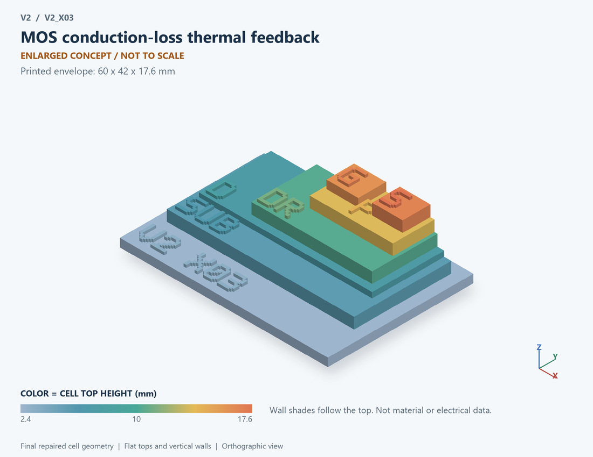
Download STL / 下载 Top view / 俯视
Printed features / 实物结构
- SUB: Exposed substrate ledge
外露衬底台阶 - D: Bottom drain
底部漏极 - DR: Vertical drift layer
垂直漂移层 - P: Body region
体区 - S: Top source
顶部源极 - G: Insulated gate
绝缘栅
Full source notes / 完整来源说明Teaching scope / 教学范围
MOS plus a lumped thermal path; heat arrows represent an assumed single-node relation, not a three-dimensional temperature field. Teaching geometry is enlarged and not to scale. It is not foundry geometry, a solved local field, or an electrically functional printed component.
MOS与集总热路径；热箭头表示假设单节点关系，不是三维温度场。教学几何经放大且不按真实比例；不是晶圆厂几何、局部场解或可工作的打印电子元件。
Teaching decomposition of the source model. The generated manifest, not this suggested parts list, identifies features physically present in each STL.
原模型的教学结构分解。各STL实际具备的形体应以生成清单为准，不把本建议部件表等同于全部实体印记。
- Conduction-loss element
导通损耗元件 - Equivalent thermal resistance
等效热阻 - Equivalent heat capacity
等效热容 - Thermal reference boundary
环境热参考边界
V2_X04 · PMOS NBTI aging
PMOS NBTI老化
mechanism_demo · legacy
Download STL / 下载 Top view / 俯视
Printed features / 实物结构
- SUB: Exposed substrate ledge
外露衬底台阶 - N: Body well
体区/阱 - S: Source contact / implanted region
源极接触/注入区 - D: Drain contact / implanted region
漏极接触/注入区 - OX: Exposed gate dielectric ledge
外露栅介质台阶 - G: Gate electrode
栅电极 - B: Separate body contact, distinct from doping label
独立体接触，与掺杂标签区分 - POL: P-channel schematic
P沟道示意
Full source notes / 完整来源说明Teaching scope / 教学范围
PMOS gate-stack teaching section plus a stress/time marker; do not print invented traps as a calibrated defect distribution. Teaching geometry is enlarged and not to scale. It is not foundry geometry, a solved local field, or an electrically functional printed component.
PMOS栅堆教学剖面及应力时间标记；不把虚构陷阱当标定缺陷分布。教学几何经放大且不按真实比例；不是晶圆厂几何、局部场解或可工作的打印电子元件。
Teaching decomposition of the source model. The generated manifest, not this suggested parts list, identifies features physically present in each STL.
原模型的教学结构分解。各STL实际具备的形体应以生成清单为准，不把本建议部件表等同于全部实体印记。
- P-channel teaching core
P沟道教学核心 - Stressed gate interface concept
受应力栅界面概念 - Bias/temperature/time relationship
偏置温度时间关系 - Symbolic threshold-shift marker
阈值偏移符号
V2_X05 · MOS flicker and thermal noise
MOS 1/f与热噪声
mechanism_demo · legacy
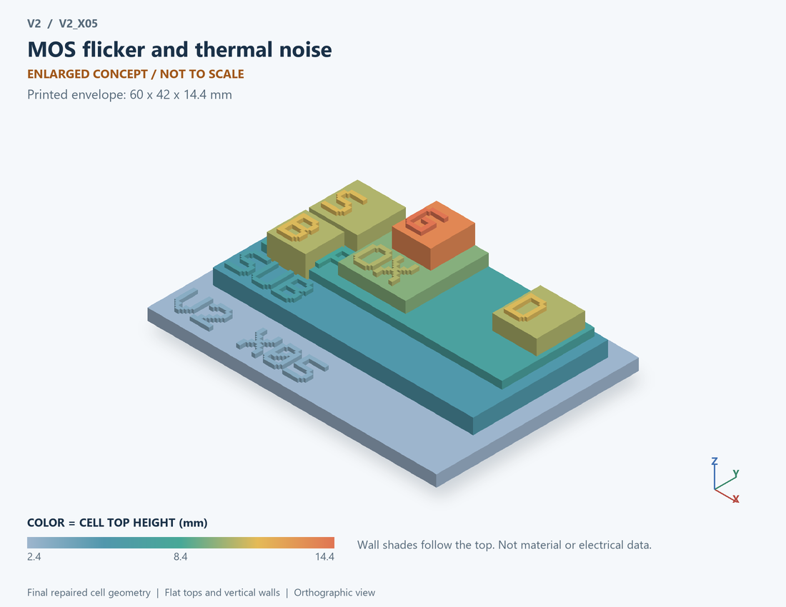
Download STL / 下载 Top view / 俯视
Printed features / 实物结构
- SUB: Exposed substrate ledge
外露衬底台阶 - P: Body well
体区/阱 - S: Source contact / implanted region
源极接触/注入区 - D: Drain contact / implanted region
漏极接触/注入区 - OX: Exposed gate dielectric ledge
外露栅介质台阶 - G: Gate electrode
栅电极 - B: Separate body contact, distinct from doping label
独立体接触，与掺杂标签区分 - POL: N-channel schematic
N沟道示意
Full source notes / 完整来源说明Teaching scope / 教学范围
MOS structure plus distinct 1/f and white-noise symbols; random topography or a moving noise waveform would not follow from the stored PSD model. Teaching geometry is enlarged and not to scale. It is not foundry geometry, a solved local field, or an electrically functional printed component.
MOS结构及独立1/f和白噪声符号；随机形貌或动态噪声波形不能由保存的PSD模型直接推出。教学几何经放大且不按真实比例；不是晶圆厂几何、局部场解或可工作的打印电子元件。
Teaching decomposition of the source model. The generated manifest, not this suggested parts list, identifies features physically present in each STL.
原模型的教学结构分解。各STL实际具备的形体应以生成清单为准，不把本建议部件表等同于全部实体印记。
- Biased transistor teaching core
有偏置晶体管教学核心 - Low-frequency noise marker
低频噪声标记 - Thermal-noise marker
热噪声标记 - Integration bandwidth marker
积分带宽标记
V2_X06 · MOS threshold and resistance statistics
MOS阈值及电阻统计分散
parameter_demo · legacy
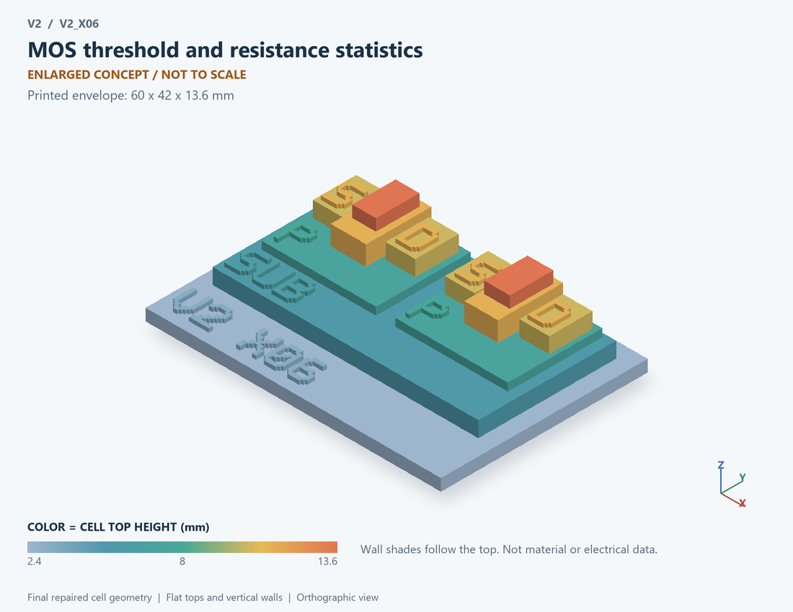
Download STL / 下载 Top view / 俯视
Printed features / 实物结构
- SUB: Exposed substrate ledge
外露衬底台阶 - P: Body well 1
体区/阱 1 - S: Source 1
源极 1 - D: Drain 1
漏极 1 - OX: Gate dielectric 1
栅介质 1 - G: Gate 1
栅极 1 - P: Body well 2
体区/阱 2 - S: Source 2
源极 2 - D: Drain 2
漏极 2 - OX: Gate dielectric 2
栅介质 2 - G: Gate 2
栅极 2
Full source notes / 完整来源说明Teaching scope / 教学范围
Identical teaching transistors illustrate parameter samples; differing surface roughness or dopant maps are not generated by this Monte Carlo model. Teaching geometry is enlarged and not to scale. It is not foundry geometry, a solved local field, or an electrically functional printed component.
相同教学晶体管表示参数样本；本Monte Carlo模型不生成不同表面粗糙度或掺杂图。教学几何经放大且不按真实比例；不是晶圆厂几何、局部场解或可工作的打印电子元件。
Teaching decomposition of the source model. The generated manifest, not this suggested parts list, identifies features physically present in each STL.
原模型的教学结构分解。各STL实际具备的形体应以生成清单为准，不把本建议部件表等同于全部实体印记。
- First parameter sample
第一参数样本 - Second parameter sample
第二参数样本 - Threshold variation marker
阈值变化标记 - Resistance variation marker
电阻变化标记
V33_A01 · Four-terminal MOS interpolation
四端MOS连续插值
physical_device · current
Download STL / 下载 Top view / 俯视
Printed features / 实物结构
- SUB: Exposed substrate ledge
外露衬底台阶 - P: Body well
体区/阱 - S: Source contact / implanted region
源极接触/注入区 - D: Drain contact / implanted region
漏极接触/注入区 - OX: Exposed gate dielectric ledge
外露栅介质台阶 - G: Gate electrode
栅电极 - B: Separate body contact, distinct from doping label
独立体接触，与掺杂标签区分 - POL: N-channel schematic
N沟道示意
Full source notes / 完整来源说明Teaching scope / 教学范围
Four electrical terminals require a visible body connection. The drawing represents a generic MOS concept; the interpolation does not determine process geometry or intrinsic charge partition. Teaching geometry is enlarged and not to scale. Circuit blocks show functional relationships and are not transistor layouts. The physical equations and numerical results remain unchanged.
四电端须显示独立体连接。图为通用MOS概念；插值模型不确定工艺几何或内禀电荷分配。教学几何经放大且不按真实比例；电路图块表示功能关系，不是晶体管版图。物理方程和数值结果保持不变。
Teaching decomposition of the source model. The generated manifest, not this suggested parts list, identifies features physically present in each STL.
原模型的教学结构分解。各STL实际具备的形体应以生成清单为准，不把本建议部件表等同于全部实体印记。
- Semiconductor body
半导体体区 - Source diffusion concept
源扩散区概念 - Drain diffusion concept
漏扩散区概念 - Enlarged gate insulator
放大的栅绝缘层 - Control electrode
控制栅 - Independent body contact
独立体接触
V33_A02 · Junction charge and varactor
结电荷与变容二极管
physical_device · current
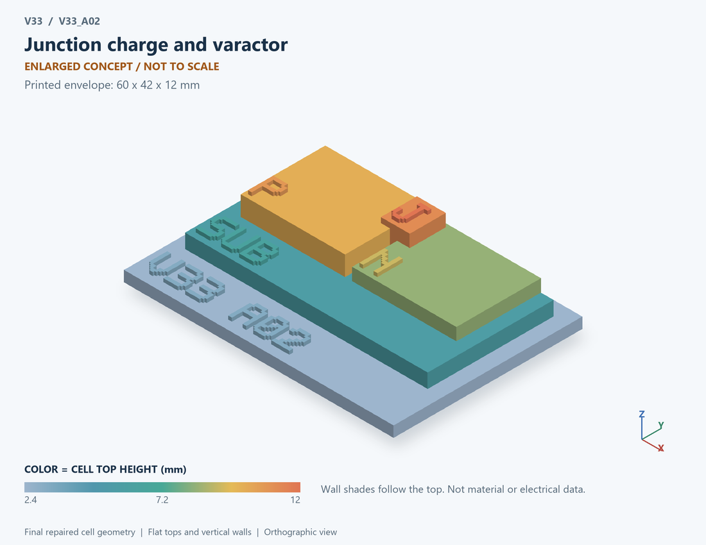
Download STL / 下载 Top view / 俯视
Printed features / 实物结构
- SUB: Exposed substrate ledge
外露衬底台阶 - P: P-type region / anode
P型区/阳极 - N: N-type region / cathode
N型区/阴极 - J: Exposed junction marker
外露结界面标记
Full source notes / 完整来源说明Teaching scope / 教学范围
A PN junction with a marked depletion region illustrates voltage-dependent capacitance; the depletion-width shape is symbolic, not solved from doping. Teaching geometry is enlarged and not to scale. Circuit blocks show functional relationships and are not transistor layouts. The physical equations and numerical results remain unchanged.
PN结与耗尽区标记表示压变电容；耗尽宽度形状为符号，不是由掺杂求解。教学几何经放大且不按真实比例；电路图块表示功能关系，不是晶体管版图。物理方程和数值结果保持不变。
Teaching decomposition of the source model. The generated manifest, not this suggested parts list, identifies features physically present in each STL.
原模型的教学结构分解。各STL实际具备的形体应以生成清单为准，不把本建议部件表等同于全部实体印记。
- Anode-side region
阳极侧区域 - Cathode-side region
阴极侧区域 - Symbolic variable-width depletion region
可变耗尽宽度符号 - Anode and cathode labels
阳极阴极标签
V33_A03 · Reciprocal NPN Ebers–Moll
满足互易关系的NPN Ebers–Moll
physical_device · current
Download STL / 下载 Top view / 俯视
Printed features / 实物结构
- SUB: Exposed substrate ledge
外露衬底台阶 - C: Collector region
集电区 - B: Base region
基区 - E: Emitter region
发射区 - DOP: N-P-N doping order
N-P-N掺杂顺序
Full source notes / 完整来源说明Teaching scope / 教学范围
A generic silicon NPN section, not SiGe HBT; its emitter/base/collector regions do not imply a specific vertical process or transit-time simulation. Teaching geometry is enlarged and not to scale. Circuit blocks show functional relationships and are not transistor layouts. The physical equations and numerical results remain unchanged.
通用硅NPN剖面，非SiGe HBT；发射基集电区不隐含特定纵向工艺或渡越时间仿真。教学几何经放大且不按真实比例；电路图块表示功能关系，不是晶体管版图。物理方程和数值结果保持不变。
Teaching decomposition of the source model. The generated manifest, not this suggested parts list, identifies features physically present in each STL.
原模型的教学结构分解。各STL实际具备的形体应以生成清单为准，不把本建议部件表等同于全部实体印记。
- Collector region
集电区 - Enlarged base region
放大的基区 - Emitter region
发射区 - Three electrical contacts
三个电气接触
V33_A04 · MOS pair mismatch and correlation
MOS配对失配与相关性
parameter_demo · current
Download STL / 下载 Top view / 俯视
Printed features / 实物结构
- SUB: Exposed substrate ledge
外露衬底台阶 - P: Body well 1
体区/阱 1 - S: Source 1
源极 1 - D: Drain 1
漏极 1 - OX: Gate dielectric 1
栅介质 1 - G: Gate 1
栅极 1 - P: Body well 2
体区/阱 2 - S: Source 2
源极 2 - D: Drain 2
漏极 2 - OX: Gate dielectric 2
栅介质 2 - G: Gate 2
栅极 2
Full source notes / 完整来源说明Teaching scope / 教学范围
Two identical MOS teaching sections indicate matched nominal devices. Differences are statistical parameters; do not print different dopant maps or call the diagram a verified common-centroid layout. Teaching geometry is enlarged and not to scale. Circuit blocks show functional relationships and are not transistor layouts. The physical equations and numerical results remain unchanged.
两个相同MOS剖面表示名义配对器件。差异属于统计参数；不绘制不同掺杂图，也不称其为验证的共质心版图。教学几何经放大且不按真实比例；电路图块表示功能关系，不是晶体管版图。物理方程和数值结果保持不变。
Teaching decomposition of the source model. The generated manifest, not this suggested parts list, identifies features physically present in each STL.
原模型的教学结构分解。各STL实际具备的形体应以生成清单为准，不把本建议部件表等同于全部实体印记。
- First nominal device
第一名义器件 - Second nominal device
第二名义器件 - Symbolic width/length labels
宽长符号标记 - Threshold-difference relation
阈值差关系 - Statistical correlation label
统计相关性标记
V33_B01 · MOS differential pair
MOS差分对
circuit_bench · current
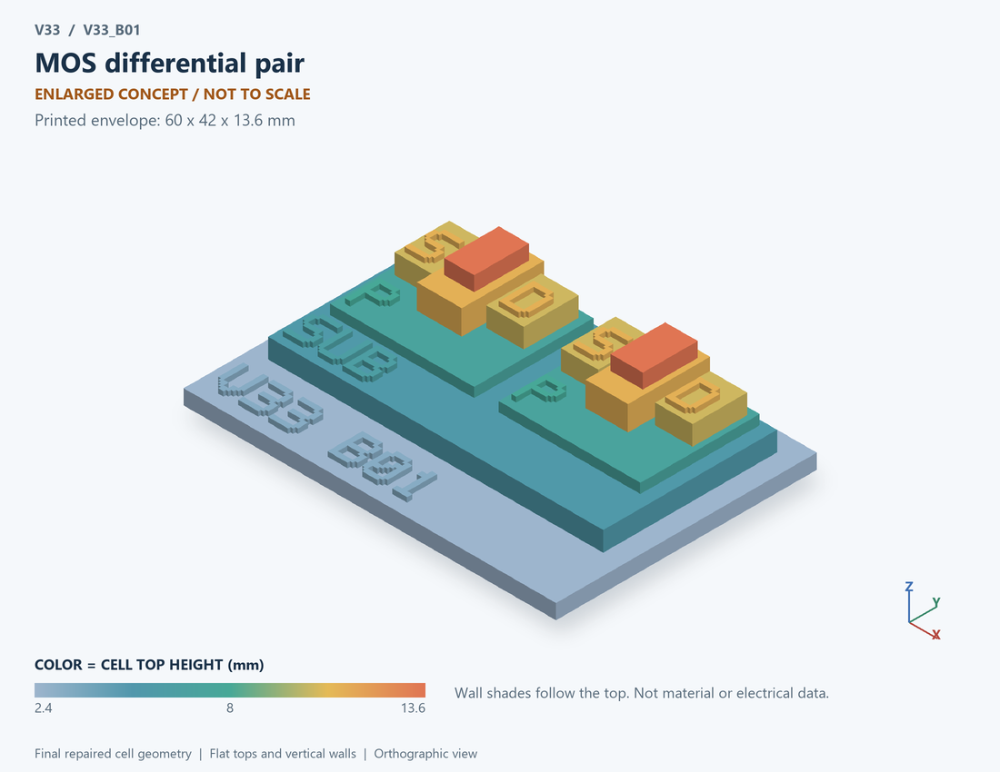
Download STL / 下载 Top view / 俯视
Printed features / 实物结构
- SUB: Exposed substrate ledge
外露衬底台阶 - P: Body well 1
体区/阱 1 - S: Source 1
源极 1 - D: Drain 1
漏极 1 - OX: Gate dielectric 1
栅介质 1 - G: Gate 1
栅极 1 - P: Body well 2
体区/阱 2 - S: Source 2
源极 2 - D: Drain 2
漏极 2 - OX: Gate dielectric 2
栅介质 2 - G: Gate 2
栅极 2
Full source notes / 完整来源说明Teaching scope / 教学范围
Two MOS sections sharing an ideal tail-source node show the circuit relation; load and amplifier compensation must not be invented as simulated components. Teaching geometry is enlarged and not to scale. Circuit blocks show functional relationships and are not transistor layouts. The physical equations and numerical results remain unchanged.
两个MOS剖面共用理想尾源节点表示电路关系；不得虚构已仿真的负载或放大器补偿。教学几何经放大且不按真实比例；电路图块表示功能关系，不是晶体管版图。物理方程和数值结果保持不变。
Teaching decomposition of the source model. The generated manifest, not this suggested parts list, identifies features physically present in each STL.
原模型的教学结构分解。各STL实际具备的形体应以生成清单为准，不把本建议部件表等同于全部实体印记。
- First input transistor
第一输入管 - Second input transistor
第二输入管 - Ideal common tail-current source
理想共同尾电流源 - Separate branch-current outputs
两支路电流输出 - Differential input labels
差分输入标签
V33_B02 · CTAT/PTAT reference sum
CTAT/PTAT基准合成
circuit_bench · current
Download STL / 下载 Top view / 俯视
Printed features / 实物结构
- SUB: Exposed substrate ledge
外露衬底台阶 - 1: First junction voltage concept
第一结电压概念 - 2: Different-area junction concept
不同面积结概念 - 3: PTAT current scaling
PTAT电流缩放 - 4: Temperature-proportional term
正温度系数项 - KEY: Numbered functional blocks, not silicon layout or solved 3D fields. See numbered key in the atlas.
编号功能块，不是硅版图或求解的三维场，编号说明见图册
Full source notes / 完整来源说明Teaching scope / 教学范围
Use conceptual junctions and an arithmetic sum, not a purported Brokaw transistor-level circuit or bandgap layout. Labels are conceptual signals because the simulation has no electrical-port list. Teaching geometry is enlarged and not to scale. Circuit blocks show functional relationships and are not transistor layouts. The physical equations and numerical results remain unchanged.
使用概念结及算术合成，不虚称Brokaw晶体管电路或带隙版图。标签为概念信号，仿真无电端口列表。教学几何经放大且不按真实比例；电路图块表示功能关系，不是晶体管版图。物理方程和数值结果保持不变。
Teaching decomposition of the source model. The generated manifest, not this suggested parts list, identifies features physically present in each STL.
原模型的教学结构分解。各STL实际具备的形体应以生成清单为准，不把本建议部件表等同于全部实体印记。
- First junction voltage concept
第一结电压概念 - Different-area junction concept
不同面积结概念 - PTAT current scaling
PTAT电流缩放 - Temperature-proportional term
正温度系数项 - CTAT plus weighted PTAT
CTAT与加权PTAT合成
V33_B03 · Input noise and sampled kT/C
输入噪声与采样kT/C
circuit_bench · current
Download STL / 下载 Top view / 俯视
Printed features / 实物结构
- SUB: Exposed substrate ledge
外露衬底台阶 - 1: Input-referred noise concept
输入参考噪声概念 - 2: Illustrative spectral shaping
示意频谱整形 - 3: White-noise contribution
白噪声贡献 - 4: Low-frequency contribution
低频噪声贡献 - KEY: Numbered functional blocks, not silicon layout or solved 3D fields. See numbered key in the atlas.
编号功能块，不是硅版图或求解的三维场，编号说明见图册
Full source notes / 完整来源说明Teaching scope / 教学范围
Print spectral/noise-path symbols and a sampling capacitor. The saved model is not a complete chopper amplifier, transistor noise generator or sampled switching netlist. Teaching geometry is enlarged and not to scale. Circuit blocks show functional relationships and are not transistor layouts. The physical equations and numerical results remain unchanged.
打印频谱/噪声路径符号及采样电容。保存模型不是完整斩波放大器、晶体管噪声发生器或采样开关网表。教学几何经放大且不按真实比例；电路图块表示功能关系，不是晶体管版图。物理方程和数值结果保持不变。
Teaching decomposition of the source model. The generated manifest, not this suggested parts list, identifies features physically present in each STL.
原模型的教学结构分解。各STL实际具备的形体应以生成清单为准，不把本建议部件表等同于全部实体印记。
- Input-referred noise concept
输入参考噪声概念 - Illustrative spectral shaping
示意频谱整形 - White-noise contribution
白噪声贡献 - Low-frequency contribution
低频噪声贡献 - Sampling-capacitance concept
采样电容概念
V33_B04 · Capacitor DAC and SAR ADC
电容DAC与SAR ADC
circuit_bench · current
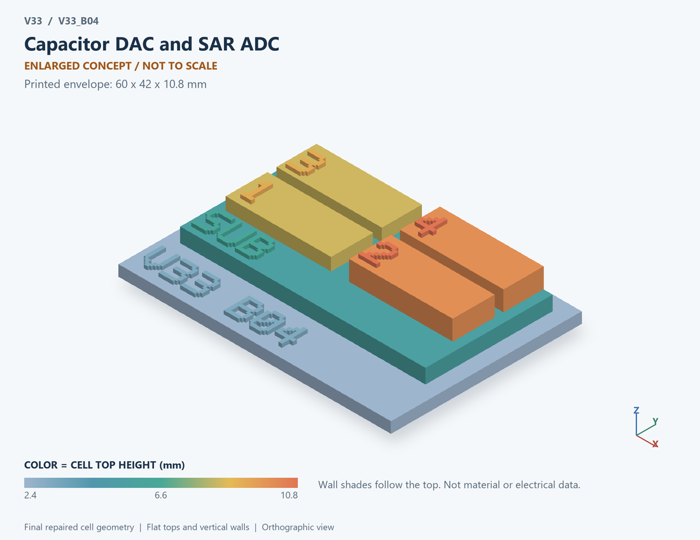
Download STL / 下载 Top view / 俯视
Printed features / 实物结构
- SUB: Exposed substrate ledge
外露衬底台阶 - 1: Binary-weighted capacitance bank concept
二进制权重电容组概念 - 2: Dummy-capacitance role
哑元电容作用 - 3: Ideal comparison block
理想比较功能块 - 4: Sequential-decision logic
逐次判决逻辑 - KEY: Numbered functional blocks, not silicon layout or solved 3D fields. See numbered key in the atlas.
编号功能块，不是硅版图或求解的三维场，编号说明见图册
Full source notes / 完整来源说明Teaching scope / 教学范围
Show a capacitor array, comparator and decision logic as functional blocks. Labels are algorithmic nodes; electrode layout and charge-switch trajectories are not extracted from a physical ADC. Teaching geometry is enlarged and not to scale. Circuit blocks show functional relationships and are not transistor layouts. The physical equations and numerical results remain unchanged.
用电容阵列、比较器与判决逻辑功能块表示。标签为算法节点；未从真实ADC提取电极版图和电荷开关轨迹。教学几何经放大且不按真实比例；电路图块表示功能关系，不是晶体管版图。物理方程和数值结果保持不变。
Teaching decomposition of the source model. The generated manifest, not this suggested parts list, identifies features physically present in each STL.
原模型的教学结构分解。各STL实际具备的形体应以生成清单为准，不把本建议部件表等同于全部实体印记。
- Binary-weighted capacitance bank concept
二进制权重电容组概念 - Dummy-capacitance role
哑元电容作用 - Ideal comparison block
理想比较功能块 - Sequential-decision logic
逐次判决逻辑 - Digital output marker
数字输出标记
V33_B05 · LDO loop and load step
LDO环路与负载阶跃
circuit_bench · current
Download STL / 下载 Top view / 俯视
Printed features / 实物结构
- SUB: Exposed substrate ledge
外露衬底台阶 - 1: Generic pass-current element
通用调整电流元件 - 2: Loop-error response
环路误差响应 - 3: Output capacitance
输出电容 - 4: Load-step boundary
负载阶跃边界 - KEY: Numbered functional blocks, not silicon layout or solved 3D fields. See numbered key in the atlas.
编号功能块，不是硅版图或求解的三维场，编号说明见图册
Full source notes / 完整来源说明Teaching scope / 教学范围
Use pass-element, amplifier and output-capacitor blocks. The small-signal state model does not specify a PMOS/NMOS device, dropout behavior or actual regulator layout. Teaching geometry is enlarged and not to scale. Circuit blocks show functional relationships and are not transistor layouts. The physical equations and numerical results remain unchanged.
使用调整元件、放大器与输出电容功能块。小信号状态模型不指定PMOS/NMOS器件、压差行为或真实稳压器版图。教学几何经放大且不按真实比例；电路图块表示功能关系，不是晶体管版图。物理方程和数值结果保持不变。
Teaching decomposition of the source model. The generated manifest, not this suggested parts list, identifies features physically present in each STL.
原模型的教学结构分解。各STL实际具备的形体应以生成清单为准，不把本建议部件表等同于全部实体印记。
- Generic pass-current element
通用调整电流元件 - Loop-error response
环路误差响应 - Output capacitance
输出电容 - Load-step boundary
负载阶跃边界 - Output-to-error feedback
输出至误差反馈
V33_B06 · Phase loop and noise transfer
相位环路与噪声传递
circuit_bench · current
Download STL / 下载 Top view / 俯视
Printed features / 实物结构
- SUB: Exposed substrate ledge
外露衬底台阶 - 1: Input phase boundary
输入相位边界 - 2: Canonical second-order response
标准二阶响应 - 3: Output phase signal
输出相位信号 - 4: Reference-noise path
参考噪声路径 - KEY: Numbered functional blocks, not silicon layout or solved 3D fields. See numbered key in the atlas.
编号功能块，不是硅版图或求解的三维场，编号说明见图册
Full source notes / 完整来源说明Teaching scope / 教学范围
A phase-input/second-order-response/phase-output diagram is appropriate; a PFD, charge pump or transistor VCO would suggest circuitry absent from this canonical phase model. Teaching geometry is enlarged and not to scale. Circuit blocks show functional relationships and are not transistor layouts. The physical equations and numerical results remain unchanged.
适合相位输入/二阶响应/相位输出图；PFD、电荷泵或晶体管VCO会暗示本标准相位模型并不存在的电路。教学几何经放大且不按真实比例；电路图块表示功能关系，不是晶体管版图。物理方程和数值结果保持不变。
Teaching decomposition of the source model. The generated manifest, not this suggested parts list, identifies features physically present in each STL.
原模型的教学结构分解。各STL实际具备的形体应以生成清单为准，不把本建议部件表等同于全部实体印记。
- Input phase boundary
输入相位边界 - Canonical second-order response
标准二阶响应 - Output phase signal
输出相位信号 - Reference-noise path
参考噪声路径 - Abstract oscillator-noise path
抽象振荡器噪声路径
V33_B07 · 40–150 V synchronous buck
40–150V同步降压
circuit_bench · current
Download STL / 下载 Top view / 俯视
Printed features / 实物结构
- SUB: Exposed substrate ledge
外露衬底台阶 - 1: Ideal high-side switch
理想高侧开关 - 2: Ideal low-side switch
理想低侧开关 - 3: Switching-node connection
开关节点连接 - 4: Output energy-storage inductor
输出储能电感 - KEY: Numbered functional blocks, not silicon layout or solved 3D fields. See numbered key in the atlas.
编号功能块，不是硅版图或求解的三维场，编号说明见图册
Full source notes / 完整来源说明Teaching scope / 教学范围
A functional power-stage layout shows high/low switches, switching node and LC output. It is a circuit teaching board, not a microscopic integrated buck cross-section. Teaching geometry is enlarged and not to scale. Circuit blocks show functional relationships and are not transistor layouts. The physical equations and numerical results remain unchanged.
用高低侧开关、开关节点与LC输出表示功能功率级。它是电路教学板，不是微观集成Buck截面。教学几何经放大且不按真实比例；电路图块表示功能关系，不是晶体管版图。物理方程和数值结果保持不变。
Teaching decomposition of the source model. The generated manifest, not this suggested parts list, identifies features physically present in each STL.
原模型的教学结构分解。各STL实际具备的形体应以生成清单为准，不把本建议部件表等同于全部实体印记。
- Ideal high-side switch
理想高侧开关 - Ideal low-side switch
理想低侧开关 - Switching-node connection
开关节点连接 - Output energy-storage inductor
输出储能电感 - Output capacitor
输出电容 - Output load
输出负载
V33_P01 · HV MOS gate charge and switching overlap
高压MOS栅电荷与开关交叠
mechanism_demo · current
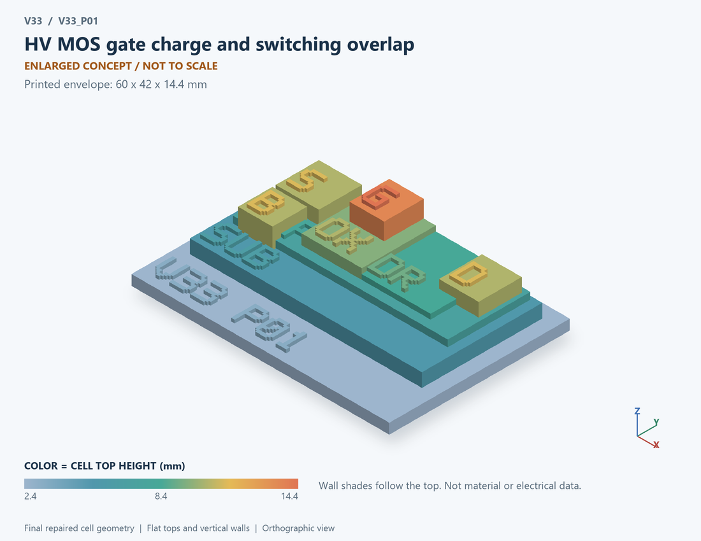
Download STL / 下载 Top view / 俯视
Printed features / 实物结构
- SUB: Exposed substrate ledge
外露衬底台阶 - P: Body well
体区/阱 - DR: Extended drift region
延伸漂移区 - S: Source contact / implanted region
源极接触/注入区 - D: Drain contact / implanted region
漏极接触/注入区 - OX: Exposed gate dielectric ledge
外露栅介质台阶 - G: Gate electrode
栅电极 - B: Separate body contact, distinct from doping label
独立体接触，与掺杂标签区分 - POL: N-channel schematic
N沟道示意
Full source notes / 完整来源说明Teaching scope / 教学范围
Use a generic HV MOS teaching section plus Cgd/Cgs/Coss relationship symbols. There is no extracted LDMOS cell or complete charge-conserving transistor port model. Teaching geometry is enlarged and not to scale. Circuit blocks show functional relationships and are not transistor layouts. The physical equations and numerical results remain unchanged.
使用通用高压MOS剖面及Cgd/Cgs/Coss关系符号。没有提取的LDMOS单元或完整电荷守恒晶体管端口模型。教学几何经放大且不按真实比例；电路图块表示功能关系，不是晶体管版图。物理方程和数值结果保持不变。
Teaching decomposition of the source model. The generated manifest, not this suggested parts list, identifies features physically present in each STL.
原模型的教学结构分解。各STL实际具备的形体应以生成清单为准，不把本建议部件表等同于全部实体印记。
- Gate, channel and drift concept
栅沟道漂移区概念 - Equivalent gate-source capacitance
等效栅源电容 - Voltage-dependent Miller coupling
压变米勒耦合 - Output capacitance relation
输出电容关系 - Gate-path resistance
栅路径电阻
V33_P02 · Dead-time diode and reverse recovery
死区二极管与反向恢复
mechanism_demo · current
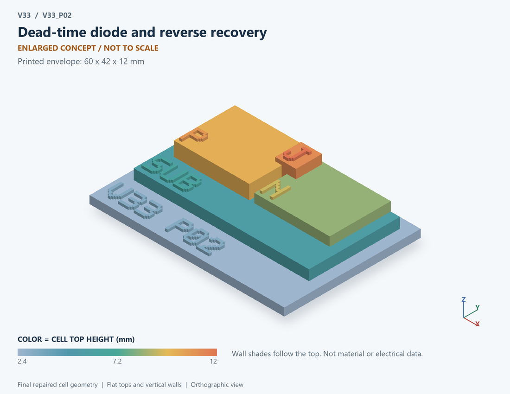
Download STL / 下载 Top view / 俯视
Printed features / 实物结构
- SUB: Exposed substrate ledge
外露衬底台阶 - P: P-type region / anode
P型区/阳极 - N: N-type region / cathode
N型区/阴极 - J: Exposed junction marker
外露结界面标记
Full source notes / 完整来源说明Teaching scope / 教学范围
The source bench relates a half bridge and its low-side body diode: diode anode at GND/source and cathode at SW/drain. The printable PN junction illustrates only the diode structure; half-bridge wiring and dead-time relations remain in the companion explanation. Recovery-charge marks are symbolic; the separate pulse is not a solved charge distribution. Teaching geometry is enlarged and not to scale. Circuit blocks show functional relationships and are not transistor layouts. The physical equations and numerical results remain unchanged.
原测试台联系半桥及低侧体二极管：阳极接GND/源，阴极接SW/漏。打印PN结仅表示二极管结构；半桥接线与死区关系在旁册解释。恢复电荷为符号；独立脉冲不是求解的电荷分布。教学几何经放大且不按真实比例；电路图块表示功能关系，不是晶体管版图。物理方程和数值结果保持不变。
Teaching decomposition of the source model. The generated manifest, not this suggested parts list, identifies features physically present in each STL.
原模型的教学结构分解。各STL实际具备的形体应以生成清单为准，不把本建议部件表等同于全部实体印记。
- Upper ideal switch
上桥理想开关 - Lower ideal switch
下桥理想开关 - Low-side source-to-drain PN diode
低侧源至漏PN二极管 - Inductor-current path
电感电流路径 - Interval with both switches off
两开关均关断区间 - Prescribed recovery-charge marker
规定恢复电荷标记
V33_P03 · Floating bootstrap supply and UVLO margin
浮地自举供电与欠压裕量
circuit_bench · current
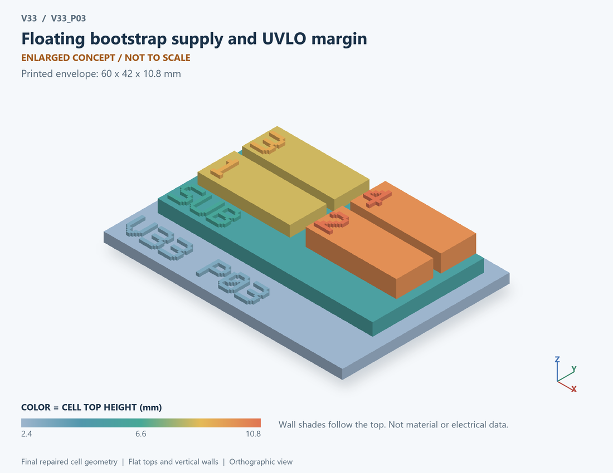
Download STL / 下载 Top view / 俯视
Printed features / 实物结构
- SUB: Exposed substrate ledge
外露衬底台阶 - 1: Recharge diode path
再充电二极管路径 - 2: Floating bootstrap capacitor
浮动自举电容 - 3: Gate-charge consumption block
栅电荷消耗功能块 - 4: Supply-margin flag only
仅供电裕量标记 - KEY: Numbered functional blocks, not silicon layout or solved 3D fields. See numbered key in the atlas.
编号功能块，不是硅版图或求解的三维场，编号说明见图册
Full source notes / 完整来源说明Teaching scope / 教学范围
Bootstrap diode and capacitor float above VS. VB and VS are nodes; VBS=VB-VS is a difference, not a third pin or the absolute gate voltage. Teaching geometry is enlarged and not to scale. Circuit blocks show functional relationships and are not transistor layouts. The physical equations and numerical results remain unchanged.
自举二极管与电容浮于VS之上。VB与VS是节点；VBS=VB-VS为差值，不是第三引脚或绝对栅压。教学几何经放大且不按真实比例；电路图块表示功能关系，不是晶体管版图。物理方程和数值结果保持不变。
Teaching decomposition of the source model. The generated manifest, not this suggested parts list, identifies features physically present in each STL.
原模型的教学结构分解。各STL实际具备的形体应以生成清单为准，不把本建议部件表等同于全部实体印记。
- Recharge diode path
再充电二极管路径 - Floating bootstrap capacitor
浮动自举电容 - Gate-charge consumption block
栅电荷消耗功能块 - Supply-margin flag only
仅供电裕量标记 - Switching-source reference
开关源极参考
V33_P04 · Level-shifter common-mode disturbance
电平移位接收端共模扰动
circuit_bench · current
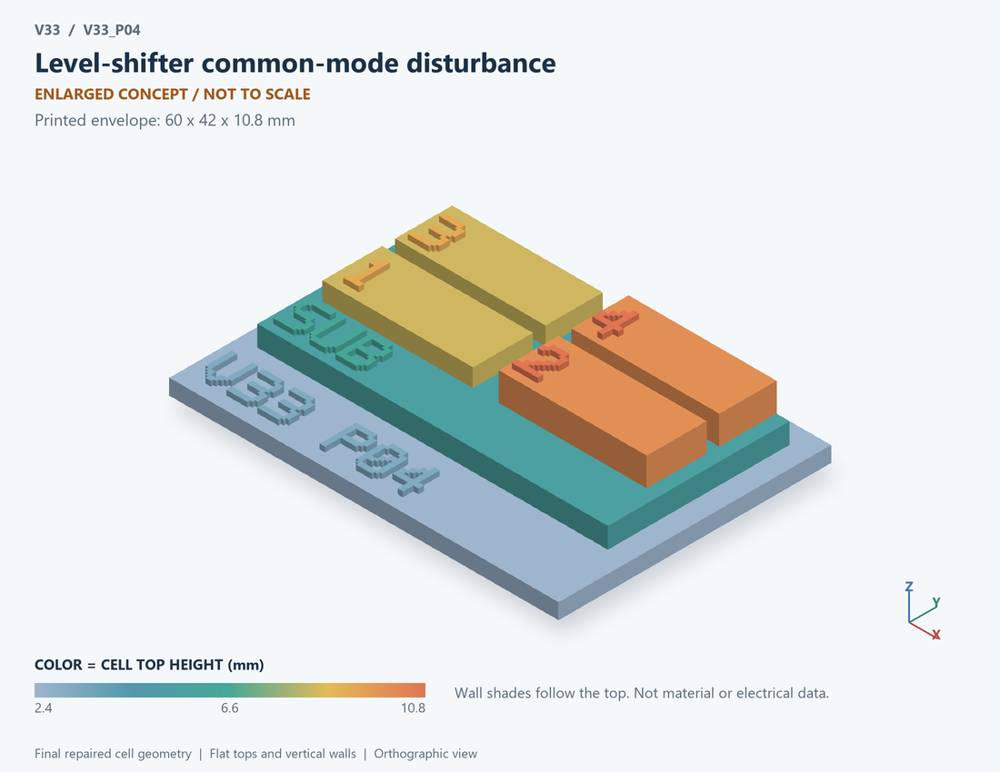
Download STL / 下载 Top view / 俯视
Printed features / 实物结构
- SUB: Exposed substrate ledge
外露衬底台阶 - 1: Common-mode edge input
共模边沿输入 - 2: Coupling capacitance
耦合电容 - 3: Receiver capacitance
接收端电容 - 4: Receiver discharge resistance
接收端泄放电阻 - KEY: Numbered functional blocks, not silicon layout or solved 3D fields. See numbered key in the atlas.
编号功能块，不是硅版图或求解的三维场，编号说明见图册
Full source notes / 完整来源说明Teaching scope / 教学范围
A capacitive coupling path into an unclamped RC receiver illustrates susceptibility. Do not draw isolation barriers, logic latches or clamp devices as though they were simulated. Teaching geometry is enlarged and not to scale. Circuit blocks show functional relationships and are not transistor layouts. The physical equations and numerical results remain unchanged.
电容耦合进入未钳位RC接收端表示扰动敏感性。不得将隔离栅、逻辑锁存器或钳位器件画成已经仿真。教学几何经放大且不按真实比例；电路图块表示功能关系，不是晶体管版图。物理方程和数值结果保持不变。
Teaching decomposition of the source model. The generated manifest, not this suggested parts list, identifies features physically present in each STL.
原模型的教学结构分解。各STL实际具备的形体应以生成清单为准，不把本建议部件表等同于全部实体印记。
- Common-mode edge input
共模边沿输入 - Coupling capacitance
耦合电容 - Receiver capacitance
接收端电容 - Receiver discharge resistance
接收端泄放电阻 - Comparison marker only
仅比较阈值标记
V33_P05 · Current-sense amplifier and delayed comparator
电流检测放大器与延迟比较器
circuit_bench · current
Download STL / 下载 Top view / 俯视
Printed features / 实物结构
- SUB: Exposed substrate ledge
外露衬底台阶 - 1: Current-sense resistance
电流检测电阻 - 2: Finite-bandwidth amplifier
有限带宽放大器 - 3: Assumed deterministic offset
假设确定性失调 - 4: Threshold and delay block
阈值与延迟功能块 - KEY: Numbered functional blocks, not silicon layout or solved 3D fields. See numbered key in the atlas.
编号功能块，不是硅版图或求解的三维场，编号说明见图册
Full source notes / 完整来源说明Teaching scope / 教学范围
A ground-referenced shunt, first-order amplifier and delayed comparator form a functional board. It is not a high-side/HV common-mode current-sense IC cross-section. Teaching geometry is enlarged and not to scale. Circuit blocks show functional relationships and are not transistor layouts. The physical equations and numerical results remain unchanged.
地参考取样电阻、一阶放大器与延迟比较器组成功能板。不是高侧/高压共模电流检测IC剖面。教学几何经放大且不按真实比例；电路图块表示功能关系，不是晶体管版图。物理方程和数值结果保持不变。
Teaching decomposition of the source model. The generated manifest, not this suggested parts list, identifies features physically present in each STL.
原模型的教学结构分解。各STL实际具备的形体应以生成清单为准，不把本建议部件表等同于全部实体印记。
- Current-sense resistance
电流检测电阻 - Finite-bandwidth amplifier
有限带宽放大器 - Assumed deterministic offset
假设确定性失调 - Threshold and delay block
阈值与延迟功能块 - Logic-output marker
逻辑输出标记
V33_P06 · HV startup supply and hysteretic UVLO
高压启动供电与迟滞欠压锁定
circuit_bench · current
Download STL / 下载 Top view / 俯视
Printed features / 实物结构
- SUB: Exposed substrate ledge
外露衬底台阶 - 1: Compliance-limited startup source
有顺从限制的启动源 - 2: Auxiliary storage capacitor
辅助储能电容 - 3: Ideal supply clamp
理想供电钳位 - 4: Two-threshold hysteresis
双阈值回差 - KEY: Numbered functional blocks, not silicon layout or solved 3D fields. See numbered key in the atlas.
编号功能块，不是硅版图或求解的三维场，编号说明见图册
Full source notes / 完整来源说明Teaching scope / 教学范围
Print a behavioral current-source block, auxiliary capacitor and hysteretic logic. Do not relabel the current source as a simulated JFET microscopic device. Teaching geometry is enlarged and not to scale. Circuit blocks show functional relationships and are not transistor layouts. The physical equations and numerical results remain unchanged.
打印行为电流源、辅助电容与迟滞逻辑。不得把电流源改称已仿真的JFET微观器件。教学几何经放大且不按真实比例；电路图块表示功能关系，不是晶体管版图。物理方程和数值结果保持不变。
Teaching decomposition of the source model. The generated manifest, not this suggested parts list, identifies features physically present in each STL.
原模型的教学结构分解。各STL实际具备的形体应以生成清单为准，不把本建议部件表等同于全部实体印记。
- Compliance-limited startup source
有顺从限制的启动源 - Auxiliary storage capacitor
辅助储能电容 - Ideal supply clamp
理想供电钳位 - Two-threshold hysteresis
双阈值回差 - State-dependent auxiliary load
状态相关辅助负载
V33_P07 · Switch-node parasitic ringing and damping
开关节点寄生振铃与阻尼
circuit_bench · current
Download STL / 下载 Top view / 俯视
Printed features / 实物结构
- SUB: Exposed substrate ledge
外露衬底台阶 - 1: Parasitic loop inductance
寄生环路电感 - 2: Linearized capacitance
线性化电容 - 3: Series damping resistance
串联阻尼电阻 - 4: Electric/magnetic storage marker
电磁储能标记 - KEY: Numbered functional blocks, not silicon layout or solved 3D fields. See numbered key in the atlas.
编号功能块，不是硅版图或求解的三维场，编号说明见图册
Full source notes / 完整来源说明Teaching scope / 教学范围
The underlying bench is series R-L-C; numbered functional blocks do not embody its wiring topology. This is a ringing surrogate, not a literal parallel RC snubber or an extracted switching loop. Teaching geometry is enlarged and not to scale. Circuit blocks show functional relationships and are not transistor layouts. The physical equations and numerical results remain unchanged.
原测试台为串联R-L-C；编号功能块不体现其实际接线拓扑。这是振铃替代模型，不是实际并联RC吸收器或已提取开关回路。教学几何经放大且不按真实比例；电路图块表示功能关系，不是晶体管版图。物理方程和数值结果保持不变。
Teaching decomposition of the source model. The generated manifest, not this suggested parts list, identifies features physically present in each STL.
原模型的教学结构分解。各STL实际具备的形体应以生成清单为准，不把本建议部件表等同于全部实体印记。
- Parasitic loop inductance
寄生环路电感 - Linearized capacitance
线性化电容 - Series damping resistance
串联阻尼电阻 - Electric/magnetic storage marker
电磁储能标记 - Closed series-response path
闭合串联响应路径
V33_P08 · DC/DC separated losses and thermal budget
DC/DC分项损耗与热预算
circuit_bench · current
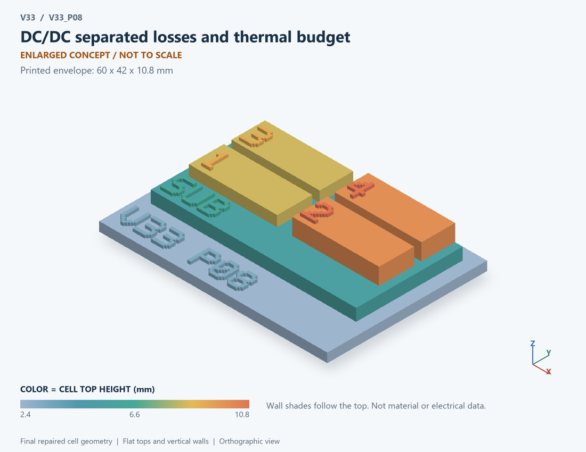
Download STL / 下载 Top view / 俯视
Printed features / 实物结构
- SUB: Exposed substrate ledge
外露衬底台阶 - 1: Conduction-loss category
导通损耗类别 - 2: Overlap and matched-Coss category
交叠与匹配Coss类别 - 3: Recovery and drive categories
恢复及驱动类别 - 4: Shared effective thermal node
共用等效热节点 - KEY: Numbered functional blocks, not silicon layout or solved 3D fields. See numbered key in the atlas.
编号功能块，不是硅版图或求解的三维场，编号说明见图册
Full source notes / 完整来源说明Teaching scope / 教学范围
Print electrical-loss categories feeding one effective thermal node. This is a loss ledger, not a literal chip cross-section; THOT is not an individual MOS junction temperature. Teaching geometry is enlarged and not to scale. Circuit blocks show functional relationships and are not transistor layouts. The physical equations and numerical results remain unchanged.
打印电损耗分类流入一个等效热节点。这是损耗预算，非真实芯片截面；THOT不是单个MOS结温。教学几何经放大且不按真实比例；电路图块表示功能关系，不是晶体管版图。物理方程和数值结果保持不变。
Teaching decomposition of the source model. The generated manifest, not this suggested parts list, identifies features physically present in each STL.
原模型的教学结构分解。各STL实际具备的形体应以生成清单为准，不把本建议部件表等同于全部实体印记。
- Conduction-loss category
导通损耗类别 - Overlap and matched-Coss category
交叠与匹配Coss类别 - Recovery and drive categories
恢复及驱动类别 - Shared effective thermal node
共用等效热节点 - Lumped thermal resistance
集总热阻 - Lumped thermal capacitance
集总热容
V33_P09 · Averaged buck soft-start and current-reference limit
平均Buck软启动与电流参考限幅
circuit_bench · current
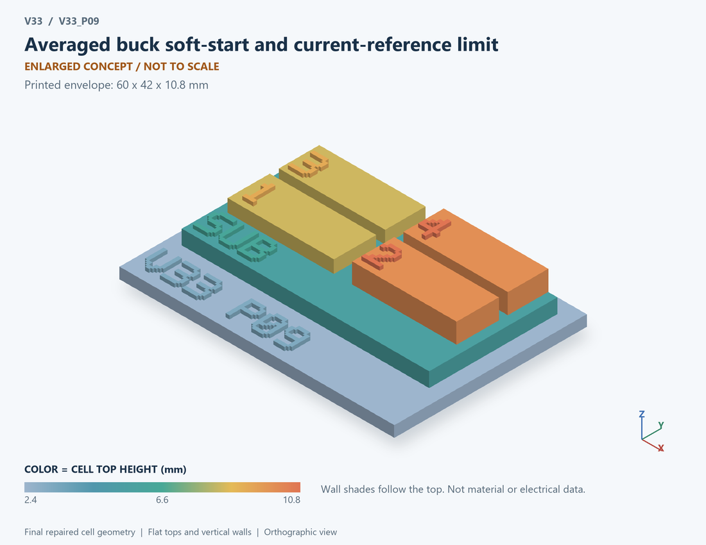
Download STL / 下载 Top view / 俯视
Printed features / 实物结构
- SUB: Exposed substrate ledge
外露衬底台阶 - 1: Outer voltage-control block
外电压控制块 - 2: Finite-bandwidth current loop
有限带宽电流环 - 3: Current-reference clip
电流参考限幅 - 4: Average-duty power stage
平均占空比功率级 - KEY: Numbered functional blocks, not silicon layout or solved 3D fields. See numbered key in the atlas.
编号功能块，不是硅版图或求解的三维场，编号说明见图册
Full source notes / 完整来源说明Teaching scope / 教学范围
Print a functional average-control path and power stage. Duty and current reference are abstract signals; there are no resolved PWM edges or verified cycle-by-cycle peak protection. Teaching geometry is enlarged and not to scale. Circuit blocks show functional relationships and are not transistor layouts. The physical equations and numerical results remain unchanged.
打印平均控制路径及功率级功能图。占空比与电流参考为抽象信号；没有解析PWM边沿或验证逐周期峰值保护。教学几何经放大且不按真实比例；电路图块表示功能关系，不是晶体管版图。物理方程和数值结果保持不变。
Teaching decomposition of the source model. The generated manifest, not this suggested parts list, identifies features physically present in each STL.
原模型的教学结构分解。各STL实际具备的形体应以生成清单为准，不把本建议部件表等同于全部实体印记。
- Outer voltage-control block
外电压控制块 - Finite-bandwidth current loop
有限带宽电流环 - Current-reference clip
电流参考限幅 - Average-duty power stage
平均占空比功率级 - Output inductor and capacitor
输出电感电容 - Reference ramp
参考斜坡